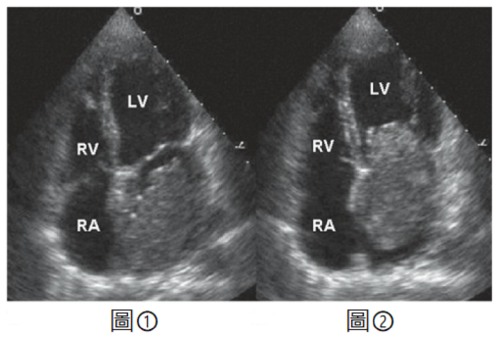
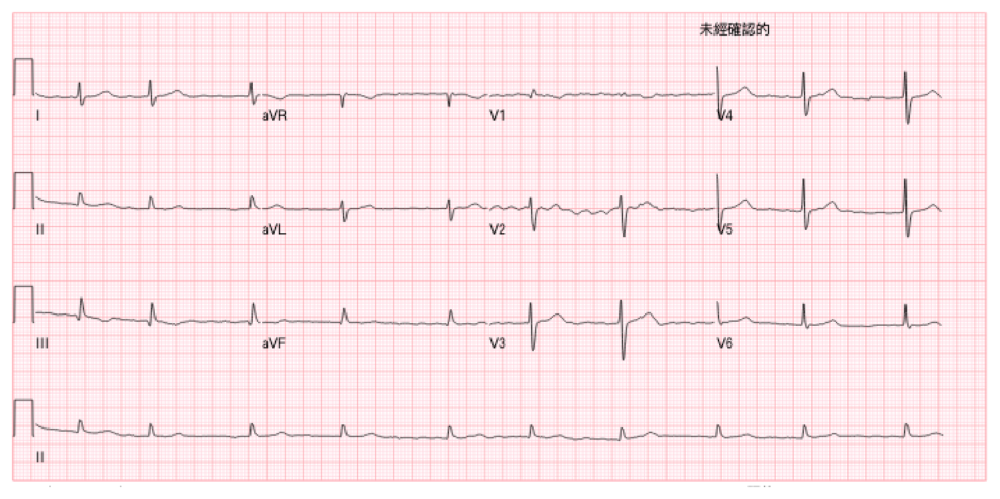
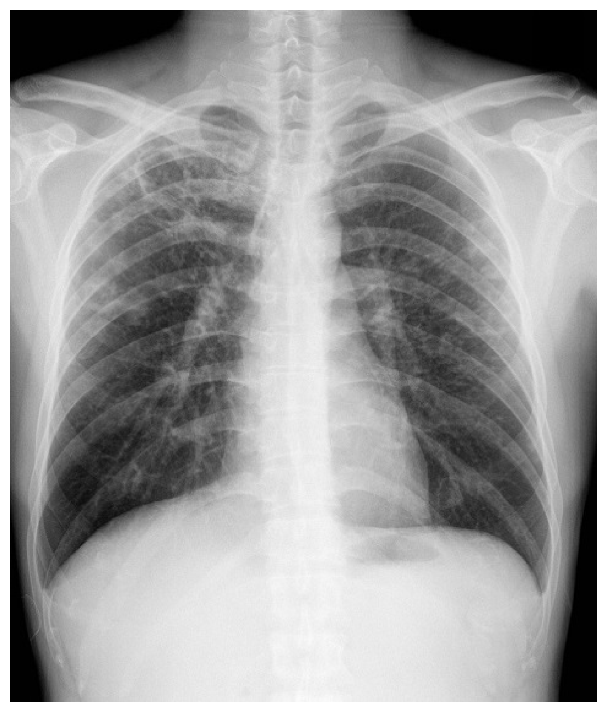
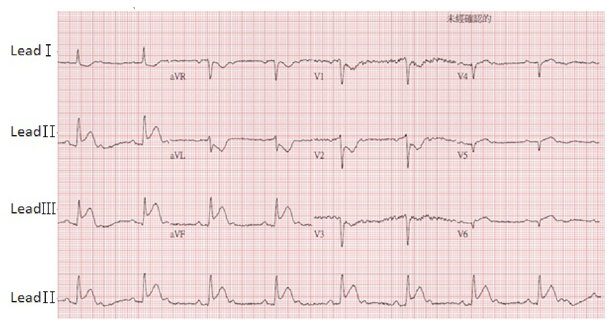

開卷有益 ／
醫師 ／ 醫學（三）（包括內科、家庭醫學科等科目及其相關臨床實例與醫學倫理） ／ 113 年第 1 次113 年第 1 次醫師醫學（三）（包括內科、家庭醫學科等科目及其相關臨床實例與醫學倫理）試題與答案
這一頁是民國 113 年第 1 次醫師醫學（三）（包括內科、家庭醫學科等科目及其相關臨床實例與醫學倫理）的整份歷屆試題，共 80 題，題目與標準答案出自考選部「國家考試試題及測驗式試題答案」開放資料，其中 80 題附有詳解。以下逐題列出題幹、選項與答案；要計時作答或記錄成績，請用線上練習。
考選部原始場次代碼：113020
線上作答這一科 →
全部 80 題
第 1 題
關於妊娠糖尿病（gestational diabetes mellitus, GDM）的敘述，下列何者最不適當？
（A） GDM的篩檢時程通常是在懷孕第24～28週執行（B） 確診有GDM的病患，先以飲食控制使血糖達到理想範圍（C） 飲食控制無法使血糖達標時，可加上胰島素或口服降血糖藥控制（D） 患有GDM的女性將來發生第二型糖尿病的風險跟沒有GDM的女性接近答案：（D）
詳解與考點 正解：本題問最不適當。妊娠糖尿病病史代表日後第二型糖尿病風險上升，而非接近沒有 GDM 的女性；因此 D 抹煞長期代謝風險，最不適當，故選 D。
A：GDM 常在妊娠第24～28週篩檢，因胎盤相關胰島素阻抗在此期較明顯，敘述適當。
B：確診後先進行醫療營養治療、活動調整與血糖監測，是常見的初始處置，敘述適當。
C：若生活型態介入未使血糖達標，可使用藥物治療；治療選擇須兼顧孕期安全性，方向正確，故非最不適當。
本題考點：妊娠糖尿病（gestational diabetes mellitus, GDM）篩檢；醫療營養治療（medical nutrition therapy）；GDM 後第二型糖尿病風險。
第 2 題
4位醫學生分別使用下列量表評估病人的預後，何者最不恰當？
學生 量表 評估對象 甲生 APACHE II Score 加護病房重症病人 乙生 BODE Index 壓傷（pressure injury）病人 丙生 International Prognostic Index 非何杰金氏淋巴瘤（non-Hodgkin’s lymphoma）病人 丁生 TIMI Risk Score 非ST波段上升之急性冠心症（non-ST segment elevation acute coronary syndrome）病人
（A） 甲生：APACHE II Score 評估加護病房重症病人（B） 乙生：BODE Index 評估壓傷（pressure injury）病人（C） 丙生：International Prognostic Index 評估非何杰金氏淋巴瘤（non-Hodgkin’s lymphoma）病人（D） 丁生：TIMI Risk Score 評估非ST波段上升之急性冠心症（non-ST segment elevation acute coronary syndrome）病人答案：（B）
詳解與考點 正解：量表與預後評估對象是否配對。BODE Index 用於慢性阻塞性肺病（chronic obstructive pulmonary disease, COPD）的預後評估，並非壓傷病人，乙生的配對不恰當，故選 B。
A：APACHE II Score 用於加護病房重症病人的疾病嚴重度與預後評估，甲生配對正確，故非答案。
C：International Prognostic Index 是非何杰金氏淋巴瘤常用的預後分層工具，丙生配對正確。
D：TIMI Risk Score 可用於非 ST 段上升急性冠心症的風險評估，丁生配對正確，故非答案。
本題考點：BODE Index 與慢性阻塞性肺病（COPD）預後；APACHE II Score；International Prognostic Index 與 TIMI Risk Score。
第 3 題
承上題，上述4種量表中，共有幾種將「年齡」納入評分項目之內？
（A） 1種（B） 2種（C） 3種（D） 4種答案：（C）
詳解與考點 正解：承上題四種量表逐一判讀年齡項目：APACHE II Score 納入年齡；BODE Index 的 B、O、D、E 分別是 body mass index、airflow obstruction、dyspnea、exercise capacity，未納入年齡；International Prognostic Index 納入年齡；TIMI Risk Score 亦納入年齡。合計 3 種，對應 C，故選 C。
A：只計 1 種漏掉 APACHE II Score、International Prognostic Index 與 TIMI Risk Score 中至少兩者的年齡項目，故錯。
B：2 種少算 1 種。BODE Index 雖不含年齡，但其餘三種皆有年齡作為評估因子。
D：4 種把 BODE Index 誤算進去；其組成不含年齡，故錯。
本題考點：APACHE II Score 的年齡校正；International Prognostic Index；TIMI Risk Score 與 BODE Index 的組成。
第 4 題
80歲男性過去有高血壓、糖尿病、高血脂症及痛風病史，最近3週以來主訴全身水腫，特別是在早晨起床時覺得眼皮周圍及臉部腫脹，日間活動之後才會逐漸改善，問診時病人表示平躺時沒有呼吸困難，半夜沒有因為喘不過氣而醒來，下列抽血檢驗結果何者最符合此病人的特徵？
（A） NT-Pro-BNP：2500 pg/mL（B） Albumin：1.8 g/dL（C） TSH：9.0 μIU/mL（D） Free T4：2.8 ng/dL答案：（B）
詳解與考點 正解：晨起眼瞼與臉部水腫、日間改善，且沒有平躺呼吸困難或夜間陣發性呼吸困難，較像低白蛋白血症造成的水腫而非心衰竭。Albumin 1.8 g/dL 顯著偏低，最符合 B，故選 B。
A：NT-pro-BNP 2500 pg/mL 支持心臟壁張力增加及心衰竭可能；但題目刻意否定典型鬱血性心衰竭症狀，並以顏面晨間水腫引向低白蛋白狀態。
C：TSH 升高可見於甲狀腺功能低下，但單獨此值不能比嚴重低白蛋白血症更完整解釋全身水腫；而甲狀腺低下通常還有其他代謝症狀。
D：Free T4 2.8 ng/dL 偏高指向甲狀腺功能亢進，與黏液性水腫或本題的水腫模式不符。
本題考點：低白蛋白血症（hypoalbuminemia）與膠體滲透壓；全身水腫的鑑別診斷；心衰竭的鬱血症狀。
第 5 題
為病人進行身體診查時，以手指拍打病人耳前之面神經分支，同側之面部肌肉會收縮；改以血壓計之纏臂（cuff）包裹手臂，加壓至高於病人收縮壓20 mmHg以上維持3分鐘，出現手腕抽筋（carpal spasm），該病人最可能有下列何種離子異常？
（A） 高血鈣（hypercalcemia）（B） 低血鈣（hypocalcemia）（C） 高血磷（hyperphosphatemia）（D） 低血磷（hypophosphatemia）答案：（B）
詳解與考點 正解：拍擊面神經引起同側面肌收縮是 Chvostek sign；血壓袖帶加壓後出現腕痙攣是 Trousseau sign。兩者都反映低血鈣使神經肌肉興奮性升高，故選 B。
A：高血鈣通常降低神經肌肉興奮性，較不會造成這兩種誘發性痙攣徵象，故錯。
C：高血磷可與低血鈣共存，但題目兩個理學徵象直接指向鈣離子降低，不能以磷異常作最適答案。
D：低血磷可造成肌無力等表現，並非 Chvostek sign 與 Trousseau sign 的典型原因。
本題考點：低血鈣（hypocalcemia）；Chvostek sign；Trousseau sign 與神經肌肉興奮性。
第 6 題
下列有關診斷性心導管中所得各項壓力之敘述，何者正確？
（A） 主動脈瓣狹窄病人當心室早搏後，於下一心跳時會出現左心室及主動脈間壓差變大，且主動脈脈搏壓減少，稱為Brockenbrough-Braunwald sign（B） 心包積液病人發生心包填塞時，右心房壓力會上升，且壓力曲線之「y下降段（y descent）」會變得極明顯（C） 束縮性心包膜炎（constrictive pericarditis）病人之右心室收縮期壓力一般低於50 mmHg，且其壓力曲線會呈現square root sign（D） 限制性心肌症（restrictive cardiomyopathy）病人之右心室舒張末期壓力，一般高於右心室收縮期壓力之1/3，且與左心室舒張末期壓力相差不超過5 mmHg答案：（C）
詳解與考點 正解：束縮性心包膜炎使心室早期舒張快速充盈、隨即受僵硬心包限制，導管壓力曲線呈早降後平台的 square root sign。右心室收縮壓通常不會顯著升高，C 的描述最符合，故選 C。
A：早搏後左心室壓上升而主動脈脈壓下降的 Brockenbrough-Braunwald sign 是肥厚型阻塞性心肌症的動態阻塞表現，不是主動脈瓣狹窄；選項把疾病與徵象錯配。
B：心包填塞的右心房壓上升，但 y descent 因心室充盈受限而變鈍，不會變得極明顯。
D：限制型心肌症可使舒張壓升高，但左右心室舒張末期壓高度接近較典型於束縮性心包膜炎；此選項把兩者的血流動力特徵混淆。
本題考點：束縮性心包膜炎（constrictive pericarditis）；square root sign；心包填塞（cardiac tamponade）與限制型心肌症的導管壓力鑑別。
第 7 題
下列有關非ST段上升急性冠狀動脈症候群（non-ST-segment elevation acute coronary syndrome, NSTE-ACS）之敘述，何者正確？
（A） 超過一半的NSTE-ACS病人，在急診行心電圖檢查能發現新的ST段下降，深的（＞3mV）T波倒置也很常見（B） NSTE-ACS的病人，若抽血發現cardiac troponin升高，但creatine kinase仍正常，尚不能診斷非ST段上升心肌梗塞（non-ST-segment elevation myocardial infarction, NSTEMI）（C） 因NSTE-ACS之致病機轉通常為不穩定斑塊破裂，所以所有病人須合併使用aspirin、P2Y12抑制劑、醣蛋白GPIIb/IIIa受體抑制劑三者，以抑制血小板凝集（D） 生命跡象及血行動力穩定、胸痛可以用藥物控制，但GRACE危險評分＞140的NSTE-ACS病人，應考慮在24小時內進行心導管及血流重建治療答案：（D）
詳解與考點 正解：NSTE-ACS 雖暫時穩定，GRACE 危險評分＞140仍屬高風險，應考慮早期侵入策略，在24小時內進行冠狀動脈攝影及必要的血流重建，D 正確，故選 D。
A：NSTE-ACS 的初始心電圖可正常或有非特異變化；新的 ST 段下降並非超過半數病人都可見，且深 T 波倒置也不能稱很常見，故錯。
B：cardiac troponin 是心肌損傷較敏感且較特異的指標；符合臨床缺血情境時，troponin 上升即可支持 NSTEMI，CK 正常不能排除。
C：aspirin 與 P2Y12 抑制劑是常用抗血小板治療，但 GPIIb/IIIa 受體抑制劑並非所有病人一律合併使用，須依出血與缺血風險選擇。
本題考點：非 ST 段上升急性冠心症（NSTE-ACS）；GRACE Risk Score；早期侵入策略（early invasive strategy）。
第 8 題
下列關於核醫心肌灌流造影的敘述，何者錯誤？
（A） 同位素心肌攝取量與血流量及心肌是否存活有關（B） Thallium-201（Tl-201）半衰期12小時，為主動運輸進入心肌，不同狀況的心肌細胞其清除率及活性不同，在心肌受傷或缺氧時，活性較高且清除率較快，因此會有「逆再分布（reverse redistribution）」的現象（C） Tc-99m sestamibi半衰期為6小時，是利用被動運輸進入心肌（D） Thallium-201（Tl-201）擁有與鉀離子相同的生物學特性答案：（B）
詳解與考點 正解：本題問錯誤敘述。Tl-201 類似鉀離子，經細胞膜的攝取與細胞活性及灌流有關；其物理半衰期約73小時，不是12小時。B 又把受傷或缺氧心肌說成活性較高，與細胞受損時攝取與處理能力下降的原理相反，故選 B。
A：心肌同位素攝取受冠狀血流與心肌細胞存活性影響，可用於判斷灌流與存活心肌，敘述正確。
C：Tc-99m sestamibi 是脂溶性陽離子示蹤劑，可隨血流擴散進入心肌並在粒線體累積；此選項以被動進入概括其主要攝取方式，非本題錯誤重點。
D：Tl-201 具有與鉀離子相似的生物學特性，是其心肌攝取機轉的核心，敘述正確。
本題考點：心肌灌流造影（myocardial perfusion imaging）；Thallium-201；Tc-99m sestamibi 與心肌存活性。
第 9 題
一位40歲男性病患，沒有任何心臟的病史，因為中風而住院。經詢問病史，過去一年躺臥呈某特定姿勢時，會伴隨眼前發黑的徵兆（black out）、倦怠、體重減輕等狀況；身體診察發現心臟聽診於心尖部舒張中期有一低頻心音，輕微杵狀指（digital clubbing）；心臟超音波檢查如附圖。圖①為心室收縮期呈像，圖②為心室舒張期呈像 （RA=右心房；RV=右心室；LV=左心室），經診斷為左心房黏液瘤（left atrialmyxoma），下列敘述何者正確？

（A） 男女的比例約為3比1（B） 因復發率高，開刀後需要肝素（heparin）或新型抗凝血劑（NOAC）治療以預防中風（C） 大部分發生在右心房，左心房次之，其他也可能在心室且常是多發性（D） 其腫瘤表面纖細（fine）、呈現絨毛（villous）、凝膠（gelatinous）狀、易碎，一旦脫落就會產生栓塞答案：（D）
詳解與考點 正解：左心房黏液瘤最常附著於心房中隔的卵圓窩附近；圖①收縮期可見腫瘤位於左心房內，圖②舒張期則隨血流經二尖瓣口脫垂進入左心室，能造成姿勢相關的間歇性二尖瓣阻塞與暈厥前症狀。其表面若呈纖細絨毛、凝膠樣且易碎，碎屑可脫落形成體循環栓塞，故選D。
A：左心房黏液瘤較常見於女性，並非男性相對女性約3比1。
B：治療以完整手術切除為主；散發性黏液瘤切除後復發率不高，且肝素或新型口服抗凝血劑不能預防腫瘤復發，並非所有術後病人均須因此長期使用。
C：約四分之三的心臟黏液瘤發生於左心房，右心房較少見；多數為單發，心室發生及多發病灶均較罕見。
本題考點：左心房黏液瘤（left atrial myxoma）的典型位置與舒張期經二尖瓣脫垂；腫瘤造成的姿勢性瓣口阻塞（ball-valve obstruction）與全身症狀；絨毛狀易碎腫瘤的栓塞（embolism）風險。
第 10 題
一位80歲男性，過去有高血壓、高血脂及心肌梗塞病史。最近一次抽血腎功能正常（CCr = 100 mL/min）今日因喘至門診，十二導程心電圖如附圖所示。為降低病患之後罹患缺血性中風之風險，下列對於給與藥物治療之敘述，何者正確？

（A） 病患不需要接受抗凝血劑治療（B） 若選擇dabigatran，當有緊急出血情況時，有抗凝血藥物反轉劑（reversal agent）可使用（C） 若病患希望選擇一天僅需吃一次的藥物，應選擇apixaban（D） 若病患出血風險高，根據目前心房顫動治療指引，可選擇aspirin替代答案：（B）
詳解與考點 正解：官方答案為 B；本圖長導程 II 的 QRS 間期大致規則，且可辨識重複性心房活動，僅憑此圖尚不足以確認典型『RR 間期不規則且缺乏明確 P 波』的心房顫動表現，惟本題臨床情境與後續抗凝血藥物選擇仍依心房顫動之假設進行。病人80歲，且有高血壓、既往心肌梗塞所代表的血管疾病，CHA2DS2-VASc score 至少為4分，缺血性中風風險高，應接受口服抗凝血治療。dabigatran 是直接凝血酶抑制劑（direct thrombin inhibitor）；發生危及生命或無法控制的緊急出血時，可使用其專一反轉劑 idarucizumab，故選 B。
A：病人並非低風險心房顫動。其年齡≥75歲、合併高血壓與血管疾病，均會增加栓塞性中風風險；在無禁忌症下應考慮口服抗凝血，而非不予抗凝血治療。
C：apixaban 通常需每日服用2次，並非每日1次。若病人偏好每日1次的直接口服抗凝血劑（direct oral anticoagulant, DOAC），可依適應症、腎功能與交互作用等條件考慮其他每日1次的藥物，不能因此選 apixaban。
D：出血風險評估的用途是辨認並修正可逆危險因子，以及安排較密切追蹤；高出血風險本身通常不是以 aspirin 取代適當口服抗凝血的理由。aspirin 對心房顫動相關栓塞性中風的預防效果遠不及口服抗凝血，且仍可能造成出血。
本題考點：心房顫動（atrial fibrillation）的心電圖特徵為 RR 間期不規則且缺乏規則 P 波；CHA2DS2-VASc score 用於評估栓塞性中風風險並決定抗凝血需求；dabigatran 為直接凝血酶抑制劑（direct thrombin inhibitor），其專一反轉劑為 idarucizumab。
第 11 題
關於心雜音的描述，下列何者錯誤？
（A） Valsalva maneuver會使主動脈狹窄（aortic stenosis）的心雜音變短和變弱（B） 在吐氣時三尖瓣回流（tricuspid regurgitation）的心雜音會變大聲（C） 在站立時二尖瓣回流（mitral regurgitation）的心雜音會變小聲（D） 在蹲著時肥厚型阻塞性心肌症（hypertrophic obstructive cardiomyopathy）的心雜音會變小聲答案：（B）
詳解與考點 正解：本題問錯誤敘述。右心雜音通常在吸氣時因靜脈回流增加而增強；三尖瓣回流雜音應隨吸氣變大聲，而非吐氣，故 B 錯誤，選 B。
A：Valsalva maneuver 降低靜脈回流與左心室充盈，主動脈狹窄跨瓣流量下降，心雜音會變弱且縮短，敘述正確。
C：站立使靜脈回流及左心室容積下降，二尖瓣回流的逆流量通常減少，心雜音變小聲，敘述正確。
D：蹲著增加後負荷與靜脈回流、擴大心室腔，減輕肥厚型阻塞性心肌症的動態阻塞，因此雜音變小聲，敘述正確。
本題考點：右心雜音與吸氣（Carvallo sign）；Valsalva maneuver 的血流動力效應；肥厚型阻塞性心肌症（HOCM）雜音。
第 12 題
關於肥厚型心肌症（hypertrophic cardiomyopathy）的描述，下列何者正確？
（A） 演變成擴大型心肌症的比率小於10%（B） 大部分病人在出生時即有左心室肥厚的現象（C） 若有左心室出口阻塞，藥物處理原則是擴張血管和降低心率（D） 運動時血壓增加30 mmHg是猝死的危險因子答案：（A）
詳解與考點 正解：肥厚型心肌症可在少數病人進入收縮功能惡化、心室擴張的末期表型；此比例小於10%，故 A 正確。
B：肥厚型心肌症雖多與遺傳變異有關，但左心室肥厚可在成長或較晚年齡才表現，不能說大部分病人出生時即有肥厚。
C：有左心室出口阻塞時，擴張血管會降低後負荷並可能加重動態阻塞；治療通常避免此方向，降低心率可有幫助但選項整體錯誤。
D：運動時血壓未能適當上升或出現下降才是較令人擔心的異常反應；增加30 mmHg 本身不是猝死危險因子。
本題考點：肥厚型心肌症（hypertrophic cardiomyopathy）；肥厚型阻塞性心肌症（HOCM）的血流動力；心臟猝死風險分層。
第 13 題
下列有關血壓測量的敘述，何者錯誤？
（A） 小腿與上臂的血壓差增加常見於重度主動脈閉鎖不全（aortic regurgitation）或嚴重下肢周邊血管疾病（B） 小腿的收縮壓通常比上臂的收縮壓高20 mmHg（C） 血壓袖帶的長度和寬度應分別為手臂圓周的80%和40%。使用不合適的小袖帶，會導致對實際血壓值明顯低估（D） 兩側上臂的收縮血壓差距，正常應在10 mmHg以內答案：（C）
詳解與考點 正解：本題問錯誤敘述。袖帶過小會需要較高壓力才能壓閉肱動脈，造成血壓被高估而非低估；因此 C 錯誤，故選 C。
A：小腿與上臂血壓差異可受血流動力及下肢血管病變影響，在主動脈瓣閉鎖不全或嚴重下肢周邊血管疾病時可能加大，敘述可成立。
B：因周邊動脈壓力放大，小腿收縮壓通常可比上臂高約20 mmHg，敘述正確。
D：兩上臂收縮壓通常差距不大；明顯差異應考慮血管狹窄等因素，10 mmHg以內可視為正常範圍，故非答案。
本題考點：血壓袖帶尺寸（blood pressure cuff size）；過小袖帶造成血壓高估；上下肢與雙上肢血壓比較。
第 14 題
有關心室性心律不整（ventricular arrhythmia）與心臟猝死（sudden cardiac death）的敘述，下列何者錯誤？
（A） 心室性心律不整的診斷是通過在心電圖上記錄心律不整，或通過植入的心律設備（如：心律調節器或植入性心內去顫器﹝Implanted Cardioversion Defibrillator, ICD﹞）或在電生理檢查過程中引發的心律不整來確定的（B） 如果可能，面對心臟猝死的病患應獲取心律不整的十二導程心電圖，並研究潛在起源部位和潛在可能心臟病（C） 猝死的發生多見於心肌缺氧性心室顫動（ventricular fibrillation）。當有植入性心內去顫器（Implanted Cardioversion Defibrillator, ICD）啟動而迅速終止心室心律不整時，代表病患在往後的死亡率與心衰竭的風險均大幅減少（D） 對於心室性心律不整的病患，其初始治療以穩定病患的血流動力學為處理目標答案：（C）
詳解與考點 正解：本題問錯誤敘述。ICD 成功終止心室性心律不整代表病人仍發生具臨床意義的心律不整事件，並不表示未來死亡率或心衰竭風險大幅降低；C 的因果推論錯誤，故選 C。
A：心室性心律不整可由表面心電圖、植入式裝置紀錄或電生理檢查誘發而確認，敘述正確。
B：若能取得發作時的12導程心電圖，有助分析心律不整型態、起源及潛在心臟病，敘述正確，故非答案。
D：面對心室性心律不整，初始處置先確保血流動力穩定與立即復甦需求，是正確的優先順序。
本題考點：心室性心律不整（ventricular arrhythmia）；植入式心臟去顫器（implantable cardioverter-defibrillator, ICD）；心臟猝死（sudden cardiac death）的初始處置。
第 15 題
Aspartate aminotransferase（AST）及 alanine aminotransferase（ALT）血中數值的升高代表肝細胞的破壞，其上升幅度及AST/ALT比值能幫助我們做鑑別診斷。下列肝臟發炎性疾病何者較不會出現肝指數大幅升高（aminotransferase＞1000 IU/L）的情形？
（A） 自體免疫性肝炎（B） 缺血性肝炎（C） 脂肪性肝炎（D） 藥物性肝炎答案：（C）
詳解與考點 正解：aminotransferase>1000 IU/L 通常提示急性大量肝細胞損傷，例如缺血性、藥物性或急性嚴重肝炎。脂肪性肝炎的 AST、ALT 多為輕至中度上升，較不會大幅超過1000 IU/L，故選 C。
A：自體免疫性肝炎在急性嚴重表現時可出現非常高的 aminotransferase，不能說較不會發生。
B：缺血性肝炎因肝臟低灌流造成急性壞死，是 aminotransferase 大幅升高的典型情境，故錯。
D：藥物性肝炎可造成急性肝細胞性損傷並使 AST、ALT 顯著上升，故非答案。
本題考點：胺基轉移酶（aminotransferase）升高的鑑別；缺血性肝炎（ischemic hepatitis）；脂肪性肝炎（steatohepatitis）。
第 16 題
陳小姐40歲，證券公司股票交易員，主訴右下腹部絞痛、腹瀉、噁心、體重減輕、發燒、大便帶有黏液，反覆發作已有3個月。右下腹有摸到一個腫塊，膝蓋關節疼痛且有紅色結節，大腸鏡檢查發現升結腸部位有鵝卵石樣（cobble stone）病變。下列敘述何者錯誤？
（A） 病因可能與腸道菌叢及陳小姐的免疫力失調有關（B） 疾病可能影響所有腸胃道，其病灶常是跳躍狀，嚴重時會導致腸道瘻管、膿瘍及狹窄（C） 病理上的特徵是非乾酪性壞死肉芽腫（noncaseating granuloma）（D） 當使用5-ASA類藥物（如sulfasalazine）、類固醇藥物或是免疫抑制劑（如azathioprine、6-MP、cyclosporine、tacrolimus），治療無效時，下一步選擇為手術治療答案：（D）
詳解與考點 正解：反覆腹痛腹瀉、體重減輕、右下腹腫塊、結節性紅斑與鵝卵石樣病灶指向克隆氏症（Crohn disease）。藥物治療無效時並非一律直接手術，仍要依疾病嚴重度、併發症及生物製劑等治療選擇評估；手術也不能根治疾病，故 D 錯誤。
A：克隆氏症的病因與腸道菌叢、宿主免疫調節及遺傳環境交互作用有關，敘述正確。
B：疾病可累及全消化道、呈跳躍性病灶，且全層發炎可造成瘻管、膿瘍與狹窄，敘述正確。
C：非乾酪性肉芽腫是克隆氏症的典型但非每例皆見的病理特徵，敘述正確。
本題考點：克隆氏症（Crohn disease）；發炎性腸道疾病（inflammatory bowel disease）；全層發炎與手術適應症。
第 17 題
病人因胃潰瘍需要接受藥物治療，關於胃藥之機轉與使用下列何者錯誤？
（A） 制酸劑（antacid）透過酸鹼中和之方法提高胃部酸鹼值（B） 第二型組織胺受體阻斷劑（H2 receptor antagonist）透過抑制胃部chief cell上之histamine receptor達到阻斷胃酸之功能（C） 氫離子幫浦抑制劑（proton pump inhibitor）以共價鍵結方式不可逆的結合於受體H+/K+-ATPase上（D） 病人由於胃食道逆流使用氫離子幫浦抑制劑（proton pump inhibitor）停藥後可能產生反彈性胃酸過度分泌答案：（B）
詳解與考點 正解：本題問錯誤敘述。H2 receptor antagonist 阻斷的是胃壁細胞（parietal cell）上的 H2 受體，降低胃酸分泌；chief cell 主要分泌胃蛋白酶原，不是此類藥物的作用細胞，因此 B 錯誤，故選 B。
A：制酸劑透過中和胃內酸，使胃液 pH 上升，敘述正確。
C：proton pump inhibitor 會不可逆抑制胃壁細胞的 H+/K+-ATPase，抑制胃酸分泌，敘述正確。
D：長期使用 PPI 後突然停藥，可能因反彈性胃酸過度分泌而使症狀復發，敘述正確，故非答案。
本題考點：H2 receptor antagonist；胃壁細胞（parietal cell）與 chief cell；proton pump inhibitor 的不可逆抑制。
第 18 題
病房中的一位56歲女性病人突然開始解大量黑便及頭暈，您是值班醫師前去處理病情。下列急性上消化道出血之處理方式，何者最不恰當？
（A） 詳細詢問病人之病史，以了解病人可能為何處出血（B） 評估病人之心跳與血壓，以得知是否為臨床上有意義的嚴重出血（C） 馬上抽血評估血色素。若血色素數值正常，則可以判斷病人無嚴重出血的可能性（D） 病人接受內視鏡檢查，若發現有正在出血之潰瘍或潰瘍處可見血管，則內視鏡止血術可降低病人之再出血、住院天數及死亡率答案：（C）
詳解與考點 正解：急性出血初期尚未完成血管內容量與組織間液平衡，血色素可暫時正常；因此不能因一次正常血色素就排除嚴重出血。C 延誤風險判斷，最不恰當，故選 C。
A：病史可協助辨識潰瘍、肝病、藥物及出血來源線索，是急性上消化道出血的重要初步評估，敘述適當。
B：心跳與血壓反映血流動力學狀態，可快速辨識休克或臨床上重要的失血，敘述適當。
D：對高風險出血性潰瘍，內視鏡止血可降低再出血與不良結果，是適當處置，故非答案。
本題考點：急性上消化道出血（acute upper gastrointestinal bleeding）；血流動力學評估（hemodynamic assessment）；血色素在急性失血早期的限制與內視鏡止血。
第 19 題
關於胃腸道吸收（absorption），下列敘述何者正確？
（A） 鐵與鈣的吸收主要在上端小腸（B） 膽酸的吸收主要在大腸（C） 維生素A、D、E、K為水溶性維生素（D） 分泌型腹瀉（secretory diarrhea）在禁食24小時後腹瀉會減輕答案：（A）
詳解與考點 正解：胃腸道各營養素的主要吸收部位。鐵主要在十二指腸與近端空腸吸收，鈣也以十二指腸及近端小腸的主動運輸最重要，因此（A）正確，故選 A。
B：膽酸經腸肝循環後，主要在末端迴腸主動再吸收，不是主要在大腸吸收。
C：維生素 A、D、E、K 是脂溶性維生素（fat-soluble vitamins），吸收需仰賴膽汁酸形成微膠粒；水溶性維生素主要是維生素 B 群與維生素 C。
D：分泌型腹瀉的腸道電解質分泌持續，禁食後通常不會明顯減輕；禁食會改善的是滲透型腹瀉（osmotic diarrhea），這正是它看似合理卻錯的關鍵。
本題考點：小腸吸收（intestinal absorption）——鐵、鈣以近端小腸吸收為主；膽酸在末端迴腸再吸收；分泌型腹瀉（secretory diarrhea）與滲透型腹瀉的禁食反應不同。
第 20 題
關於急性腸阻塞（acute intestinal obstruction）之敘述，下列何者錯誤？
（A） 小腸阻塞比起大腸阻塞常見（B） 手術後沾黏是小腸阻塞的常見原因（C） 腸扭轉（volvulus）是大腸阻塞最常見的原因（D） 乙狀結腸扭轉引發之大腸阻塞可以內視鏡置放引流管減壓（decompression）答案：（C）
詳解與考點 正解：題目問「何者錯誤」，關鍵是區分大腸阻塞的常見病因。大腸阻塞最常見的原因是大腸癌，腸扭轉雖是重要原因，尤其常見於乙狀結腸，卻不是最常見原因，因此錯誤的是（C），故選 C。
A：小腸阻塞的整體發生率高於大腸阻塞，敘述正確，故不是本題答案。
B：腹部手術後沾黏（adhesion）是小腸阻塞最常見的原因之一，敘述正確。
D：乙狀結腸扭轉在沒有腹膜炎、缺血或穿孔時，可先以內視鏡復位並置放直腸引流管減壓；這是初始處置，並非把所有情況都排除手術。
本題考點：急性腸阻塞（acute intestinal obstruction）——小腸阻塞常與術後沾黏相關；大腸阻塞先想到惡性腫瘤；乙狀結腸扭轉可先行內視鏡減壓。
第 21 題
一般而言，癌症的確診都需要病理切片。由於肝細胞癌（hepatocellular carcinoma, HCC）有其特殊性，所以國際上的診斷標準除了切片外，如果在影像學上有典型的特徵，也可以不必做肝臟切片就符合肝細胞癌的診斷條件。下列何者情況即使沒有病理切片診斷，也符合肝細胞癌的診斷條件？
（A） 在脂肪肝的背景下，有一顆3公分的肝腫瘤，在電腦斷層動脈相中影像增強（arterial enhancement），靜脈相中顯影劑沖失（venous washout）（B） 肝硬化病人，不過沒有B型肝炎也沒有C型肝炎，有一顆5公分的肝腫瘤，在電腦斷層動脈相中影像增強（arterial enhancement），靜脈相中顯影劑沖失（venous washout）（C） B型肝炎帶原者沒有肝硬化，有一顆2公分的肝腫瘤，在電腦斷層動脈相及靜脈相中，都具有影像增強（arterial enhancement）（D） 慢性C型肝炎病人併有肝硬化，有一顆4公分的肝腫瘤，在電腦斷層動脈相中無影像增強（no arterialenhancement），在靜脈相中為呈現影像強度降低（hypodense）答案：（B）
詳解與考點 正解：高危險背景中的肝腫瘤，且電腦斷層呈動脈期增強、靜脈期沖失（washout）這一典型血流動力學表現。肝硬化本身即是肝細胞癌高危險族群，不以是否合併 B、C 型肝炎為必要條件；（B）在肝硬化背景下有 5 cm 病灶與典型影像，因此可符合非侵入性肝細胞癌診斷，故選 B。
A：脂肪肝本身不等同於可直接套用此非侵入性診斷條件的高危險背景；雖有典型影像，仍須考量病人是否已有肝硬化或其他高危險條件。
C：B 型肝炎帶原者可屬高危險族群，但（C）只有動脈期與靜脈期持續增強，缺少典型的靜脈期沖失，不能以此影像型態直接確診。
D：慢性 C 型肝炎合併肝硬化是高危險背景，但（D）沒有動脈期增強；單有靜脈期低密度不足以構成典型肝細胞癌影像表現。
本題考點：肝細胞癌（hepatocellular carcinoma, HCC）非侵入性診斷——須結合高危險背景與典型動脈期增強、後期沖失；肝硬化的成因不限定為病毒性肝炎。
第 22 題
下列何種族群，最不需要加強篩檢B型肝炎？
（A） 懷孕婦女（B） 女女性行為者（women who have sex with women, WSW）（C） C型肝炎感染患者（D） 接受免疫抑制劑治療的患者答案：（B）
詳解與考點 正解：題目問最不需要加強篩檢 B 型肝炎的族群。懷孕、合併 C 型肝炎，以及即將接受免疫抑制治療者，都會影響母嬰垂直傳播防治、病毒性肝炎共感染評估或再活化風險；相較之下，單純女性與女性性行為（WSW）不是 B 型肝炎加強篩檢的典型特定高風險指標，因此選（B）。
A：孕婦篩檢可辨識帶原者並安排母嬰垂直傳播預防，是重要公共衛生措施，故非答案。
C：C 型肝炎感染者應評估其他血源性病毒感染，包括 B 型肝炎，共感染會影響後續治療與追蹤。
D：免疫抑制治療可能造成既往 B 型肝炎感染再活化，治療前篩檢有助於風險分層與預防。
本題考點：B 型肝炎篩檢（hepatitis B screening）——孕婦、病毒性肝炎共感染者與接受免疫抑制者是需特別評估的族群；B 型肝炎再活化（HBV reactivation）為免疫抑制前篩檢的重要原因。
第 23 題
55歲男性肝硬化病人，併發腹水與下肢水腫，抽血檢查血中鈉離子：130 mEq/L，白蛋白：2.6 g/dL。下列那一種處置對這位病人較恰當？
（A） 每天限水1.5 L，每天補充鈉離子4 g，furosemide 40 mg/day + spironolactone 100 mg/day（B） 每天限水1.5 L，每天限制鈉離子攝取2 g，furosemide 40 mg/day + spironolactone 100 mg/day（C） 每天intravenous normal saline 2 L，furosemide 40 mg/day + spironolactone 100 mg/day（D） 每天intravenous normal saline 2 L，每天補充鈉離子4 g答案：（B）
詳解與考點 正解：肝硬化合併腹水、下肢水腫與低鈉血症；處置要減少總體鈉水滯留，而不是補鈉或常規輸注生理食鹽水。（B）在四個選項中最恰當，關鍵是每日限制鈉離子攝取 2 g，以及 furosemide 40 mg/day 加 spironolactone 100 mg/day，以限鈉和合併利尿劑控制腹水；Na 130 mEq/L 僅屬輕度低鈉，是否另需限水應依低鈉程度與臨床狀況決定，故選 B。
A：（A）雖採用相同利尿劑組合，但補充鈉離子會增加鈉水滯留，不利於腹水與水腫控制。
C：每日輸注 normal saline 會增加血管外液體負荷與鈉負荷，不能作為此類肝硬化腹水的常規處置。
D：（D）同時輸注 normal saline 與補鈉，均會加重鈉水滯留，與治療目標相反。
本題考點：肝硬化腹水（cirrhotic ascites）——限鈉是基礎治療；螺內酯（spironolactone）與 furosemide 常合併使用；低鈉血症合併體液過多時重點是處理水鈉滯留，限水門檻須依臨床狀況判定。
第 24 題
73歲男性，患有糖尿病、高血壓、慢性腎病，無呼吸困難、噁心、嘔吐、水腫之症狀，抽血檢驗發現血中creatinine 9.8 mg/dL、腎絲球過濾率（eGFR）6 mL/min/1.73 m2、K+ 4.2 mEq/L、血色素10.8 g/dL，病人計畫接受長期血液透析治療，預先建立血液透析血管通路（hemodialysis vascular access），下列何種為優先選擇？
（A） 動靜脈瘻管（arteriovenous fistula）（B） 動靜脈植入型搭橋瘻管（arteriovenous graft）（C） 雙腔導管（double lumen catheter）（D） 雙腔隧道式導管（double lumen tunneled catheter）答案：（A）
詳解與考點 正解：病人規劃長期血液透析且目前無緊急透析適應症，應預先建立最耐用、感染與血栓風險較低的通路。自體動靜脈瘻管（arteriovenous fistula, AVF）有較佳長期通暢性，故是優先選擇（A），故選 A。
B：動靜脈植入型搭橋瘻管（arteriovenous graft, AVG）可在血管條件不適合建立 AVF 時使用，但感染與血栓、介入維護需求通常較高，非第一優先。
C：非隧道式雙腔導管適合需要立即透析時的暫時通路，長期留置感染及血流相關併發症風險高。
D：隧道式雙腔導管可作較長期的導管通路，但仍不如自體 AVF 適合已能預先規劃的長期透析病人。
本題考點：血液透析血管通路（hemodialysis vascular access）——自體動靜脈瘻管（AVF）為優先長期通路；移植物（AVG）與中心靜脈導管多用於 AVF 不可行或需緊急使用時。
第 25 題
下列有關急性間質性腎炎（acute interstitial nephritis）的敘述，何者錯誤？
（A） 發燒、紅疹及嗜伊紅性白血球增加只發生在少數因藥物過敏所致的病人（B） 尿液檢驗可見膿尿，白血球圓柱體及顯微鏡下血尿（C） 若病史夠清楚，通常不需要腎臟切片即可診斷（D） 類固醇治療可加速腎功能恢復，並改善長期腎臟存活答案：（D）
詳解與考點 正解：題目問錯誤敘述。急性間質性腎炎（acute interstitial nephritis, AIN）最重要的處置是停用可疑藥物；類固醇在部分藥物相關病例可能被考慮，但其對長期腎臟存活的確定改善並非一致、可一概而論的結論。因此（D）把治療效果說成必然可改善長期存活，過度肯定，故選 D。此題對類固醇長期效益的證據強度有不確定性
A：藥物相關 AIN 的典型三徵候為發燒、紅疹、嗜伊紅性白血球增加，但三者同時出現並不常見，敘述正確。
B：無菌性膿尿、白血球圓柱體與顯微鏡下血尿皆可見於 AIN，符合腎間質發炎的尿液表現。
C：若有明確藥物暴露時序、腎功能惡化及相符尿液線索，可先依臨床診斷處置；腎臟切片通常留給診斷不明或病程未改善者。
本題考點：急性間質性腎炎（acute interstitial nephritis, AIN）——常與藥物超敏反應相關；尿液可見膿尿與白血球圓柱；停用可疑藥物是核心處置，類固醇效益須依個案與證據判斷。
第 26 題
下列何者不是成人逆流性腎病變（reflux nephropathy）的典型特徵？
（A） 病人小時候常有尿床或重複泌尿道感染史（B） 若演變成慢性腎臟病，尿液僅輕微蛋白尿無異常沉渣（C） 超音波可見腎臟呈對稱性萎縮及不規則狀輪廓（D） 積極控制血壓可減緩腎功能惡化的速度答案：（C）
詳解與考點 正解：題目問不是成人逆流性腎病變（reflux nephropathy）典型特徵者。膀胱輸尿管逆流造成的腎疤痕往往是局部、非對稱分布，常累及上、下腎極；因此（C）的「對稱性萎縮」較不像典型表現，故選 C。
A：兒童期反覆泌尿道感染或排尿功能異常病史，可是膀胱輸尿管逆流與其腎損害的線索，敘述合理。
B：進展為慢性腎臟病時可出現輕度蛋白尿，尿沉渣常不具活動性，符合慢性疤痕性腎病變的表現。
D：高血壓會促進慢性腎病惡化，積極控制血壓有助減緩腎功能下降，故屬適當敘述。
本題考點：逆流性腎病變（reflux nephropathy）——膀胱輸尿管逆流（vesicoureteral reflux）可造成非對稱性腎疤痕；慢性期常見高血壓、輕度蛋白尿與腎功能惡化。
第 27 題
下列何種臨床情境最不須將雙側尿路阻塞納入鑑別診斷之列？
（A） acute kidney injury accompanied by anuria（B） renal failure with postural hypotension（C） azotemia with metabolic acidosis and hyperkalemia（D） presence of acquired nephrogenic diabetes insipidus答案：（B）
詳解與考點 正解：「最不須」考慮雙側尿路阻塞的情境。姿勢性低血壓提示有效循環血量不足，較符合腎前性腎損傷（prerenal acute kidney injury），本身不特別指向雙側尿路阻塞，因此選（B）。
A：急性腎損傷合併無尿時，須優先排除雙側輸尿管阻塞、膀胱出口阻塞等後腎性原因。
C：氮血症合併代謝性酸中毒與高血鉀可見於嚴重腎功能衰竭；雖不特異，仍須將可逆的阻塞性腎病變納入鑑別。
D：後天性腎性尿崩症可能與長期阻塞造成的腎小管濃縮功能障礙相關，是看似與「阻塞」相反的多尿線索，卻不能排除其關聯。
本題考點：後腎性急性腎損傷（postrenal acute kidney injury）——無尿時應排除雙側尿路或膀胱出口阻塞；姿勢性低血壓較支持腎前性低灌流。
第 28 題
一位26歲女性，有多年systemic lupus erythematosus（SLE）病史，但沒有規則追蹤。最近二週出現喘、水腫、尿量減少，體重增加近5公斤。安排住院後入院時，血壓160/94 mmHg，抽血檢驗結果如下：BUN 110mg/dL，creatinine 4.0 mg/dL，urine protein（4+）。因為腎臟功能惡化，安排病人接受腎臟切片檢查（renal biopsy），切片下呈現狼瘡性腎炎（lupus nephritis），下列何者病理變化最不可能出現在該切片中？
（A） diffuse proliferative nephritis with diffuse subendothelial deposit（B） focal segmental glomerulosclerosis（C） membranous glomerulonephritis with subepithelial immune complex deposit（D） global endocapillary proliferation, crescent formation答案：（B）
詳解與考點 正解：已確診狼瘡性腎炎，問最不可能出現的病理變化。狼瘡性腎炎源於免疫複合體沉積，可呈彌漫增生性病變、膜性病變或嚴重的毛細血管內增生與新月體；原發性局部節段性腎絲球硬化（focal segmental glomerulosclerosis, FSGS）則不是典型的狼瘡性腎炎分型，故選 B。
A：彌漫性增生性狼瘡性腎炎常有廣泛腎小球受累及內皮下免疫複合體沉積，符合典型病理。
C：膜性狼瘡性腎炎可見上皮下免疫複合體沉積，常與大量蛋白尿相關，故可能出現。
D：嚴重增生性狼瘡性腎炎可有毛細血管內增生及新月體形成，代表活動性、較重的腎小球發炎。
本題考點：狼瘡性腎炎（lupus nephritis）——免疫複合體可沉積於不同部位而形成增生性或膜性病變；局部節段性腎絲球硬化（FSGS）不是其典型分類病灶。
第 29 題
一位40歲病人原本腎功能正常，現其血清creatinine在48小時內上升至2.5 mg/dL，下列何種狀況最可判斷此病人傾向內生性急性腎損傷（intrinsic acute kidney injury）？
（A） 尿鈉排出比例（fractional excretion of sodium, FeNa）＜1%（B） 尿液滲透壓＞500 mOsm/L（C） 血液尿素與肌酸酐比率（BUN-to-creatinine ratio）＞20（D） 尿沉澱物可見顆粒性圓柱體（granular cast）答案：（D）
詳解與考點 正解：分辨腎前性與內生性急性腎損傷。腎小管受損時，尿液常可見顆粒性圓柱體（granular cast），尤其是泥褐色顆粒圓柱，支持急性腎小管損傷等內生性病因，因此選（D）。
A：FeNa <1% 表示腎臟仍努力保留鈉，較支持腎前性低灌流，而非典型內生性腎損傷。
B：尿液滲透壓＞500 mOsm/L 顯示濃縮能力尚佳，也較符合腎前性狀態。
C：BUN-to-creatinine ratio>20 常因尿素再吸收增加而見於腎前性低灌流；它看似代表腎功能差，實際上鑑別重點在比例所反映的再吸收。
本題考點：內生性急性腎損傷（intrinsic acute kidney injury）——尿沉渣是重要線索，顆粒性圓柱支持腎小管損傷；FeNa 低、尿液濃縮與 BUN/creatinine 比值升高較偏向腎前性病因。
第 30 題
造成慢性腎臟病貧血的原因，下列何者錯誤？
（A） 病患身體所製造之紅血球生成素（erythropoietin）過多（B） 病患體內鐵質利用不良（C） 病患合併出血傾向（bleeding diathesis）（D） 病患處於慢性發炎狀態（chronic inflammation）答案：（A）
詳解與考點 正解：題目問慢性腎臟病貧血的錯誤原因。慢性腎臟病時受損腎臟的紅血球生成素（erythropoietin, EPO）產生不足，造成紅血球生成減少；因此（A）說 EPO 過多與病理生理相反，故選 A。
B：慢性發炎與尿毒狀態可造成鐵利用不良，形成機能性缺鐵，會加重貧血。
C：尿毒症相關血小板功能異常可增加出血傾向，慢性或反覆失血會使貧血惡化。
D：慢性發炎會增加 hepcidin、降低鐵可用性並抑制造血，為慢性腎臟病貧血的加重因素。
本題考點：慢性腎臟病貧血（anemia of chronic kidney disease）——核心機轉是 EPO 不足；鐵利用障礙、慢性發炎與失血亦可共同加重貧血。
第 31 題
關於calcium pyrophosphate deposition（CPPD）disease的描述，下列何者最適當？
（A） CPPD disease常被稱為假性痛風（pseudogout）而有類似痛風的臨床症狀，較常發生在年輕人（B） 會有含calcium的結晶沉澱在關節，但此病與primary hyperparathyroidism沒有關係（C） 常侵犯膝關節，關節液的偏光顯微鏡分析可發現菱形（rhomboid）或類似棒狀（rod-like）的正偏光結晶（D） 關節X光可能會看到chondrocalcinosis，但此現象在痛風關節炎（gouty arthritis）也常被發現答案：（C）
詳解與考點 正解：CPPD 的結晶形態與偏光特徵。CPPD 常侵犯膝關節；關節液可見菱形或短棒狀結晶，呈正偏光性（positive birefringence），故（C）最適當，選 C。
A：CPPD 雖稱假性痛風（pseudogout）且可有類痛風的急性關節炎，但較常見於高齡者，不是年輕人。
B：CPPD 與副甲狀腺機能亢進（primary hyperparathyroidism）等代謝疾病有關，故不能說沒有關係。
D：軟骨鈣化（chondrocalcinosis）是 CPPD 的典型 X 光線索；痛風則以尿酸鹽沉積造成的侵蝕性改變為主，並不常見此現象。
本題考點：焦磷酸鈣沉積疾病（calcium pyrophosphate deposition, CPPD disease）——關節液可見正偏光的菱形結晶；軟骨鈣化是重要影像線索；須與負偏光針狀尿酸鹽結晶的痛風區分。
第 32 題
有關diffuse cutaneous systemic sclerosis與limited cutaneous systemic sclerosis常見臨床表徵比較，下列敘述何者最適當？
（A） joint contractures較常出現在limited cutaneous systemic sclerosis病人（B） 快速進展的間質性肺炎（interstitial lung disease）較常出現在diffuse cutaneous systemicsclerosis病人（C） calcinosis cutis較常出現在diffuse cutaneous systemic sclerosis病人（D） scleroderma renal crisis 較常出現在 limited cutaneous systemic sclerosis 病人答案：（B）
詳解與考點 正解：diffuse 與 limited cutaneous systemic sclerosis 的內臟侵犯差異。瀰漫型皮膚系統性硬化症（diffuse cutaneous systemic sclerosis）較容易在疾病早期出現快速進展的間質性肺病（interstitial lung disease），故（B）最適當，選 B。
A：關節攣縮與較廣泛、較深的皮膚纖維化相關，較偏向 diffuse 型而非 limited 型。
C：鈣化症（calcinosis cutis）是 limited 型 CREST 表現的一部分，不能說較常見於 diffuse 型。
D：硬皮症腎危象（scleroderma renal crisis）較常見於 diffuse 型，尤其皮膚病變快速進展者；這是最強誘答，因它也是嚴重內臟併發症，但分型方向相反。
本題考點：系統性硬化症（systemic sclerosis）分型——diffuse 型較常見早期快速間質性肺病與腎危象；limited 型常與 CREST 表現及鈣化症相關。
第 33 題
有關giant cell arteritis，下列敘述何者最適當？
（A） 大多發生在小於50歲的病人（B） 男性比女性常見（C） 可以用tocilizumab治療（D） 約5%病人會合併polymyalgia rheumatica答案：（C）
詳解與考點 正解：giant cell arteritis 的治療。tocilizumab 阻斷介白素-6 受體（interleukin-6 receptor），可作為巨細胞動脈炎的治療選項並協助減少類固醇暴露，因此（C）最適當，故選 C。
A：巨細胞動脈炎幾乎發生於 50 歲以上成人，年齡小於 50 歲應優先思考其他血管炎或診斷。
B：本病女性較男性常見，故（B）的性別分布相反。
D：多發性肌痛（polymyalgia rheumatica, PMR）與巨細胞動脈炎常有重疊，比例遠不只約 5%；它看似只是伴隨症狀，實際上是重要的相關疾病。
本題考點：巨細胞動脈炎（giant cell arteritis）——好發於 50 歲以上且女性較多；與多發性肌痛（PMR）密切相關；tocilizumab 是可用的免疫調節治療。
第 34 題
小李是一位計程車司機，近6個月來每到傍晚身上就開始出現奇癢的膨疹（wheals）。醫師幫小李驗血檢查沒有發現什麼特別的疾病，也沒有驗到過敏原，對於小李的治療，下列何者最適當？
（A） desloratadine 5 mg daily（B） diphenhydramine 50 mg every 6 hours daily（C） prednisolone 0.5 mg/kg daily（D） topical clobetasol as-needed答案：（A）
詳解與考點 正解：反覆膨疹超過 6 個月、檢查未見特定誘因，符合慢性自發性蕁麻疹（chronic spontaneous urticaria）。第一線治療為規律使用第二代 H1 抗組織胺；（A）desloratadine 5 mg daily 較不易造成嗜睡，對計程車司機尤其合適，故選 A。
B：diphenhydramine 是第一代 H1 抗組織胺，鎮靜與認知、反應速度受影響較明顯；它看似能快速止癢，卻不適合需要駕駛的病人作規律治療。
C：口服 prednisolone 不適合作為慢性蕁麻疹的長期常規治療，因全身性類固醇不良反應較多。
D：蕁麻疹的病灶位於真皮較深層且會游走，外用 clobetasol 通常效果有限，也不宜任意長期使用高強度外用類固醇。
本題考點：慢性自發性蕁麻疹（chronic spontaneous urticaria）——第二代 H1 抗組織胺為第一線；第一代抗組織胺的鎮靜作用會影響駕駛安全；全身性類固醇不作長期常規治療。
第 35 題
22歲蔡小姐，因為反覆發燒，多處關節腫痛以及下肢水腫約一個月而入院治療。初步抽血檢驗顯示WBC=3,200/mm3，Hb=10 g/dL，platelet=56,000/mm3，urine protein/creatinine ratio=3,800 mg/g，胸部X光發現兩側肋膜皆有少量積水。下列何項處置對疾病確診最無幫助？
（A） 檢驗血中抗核抗體（antinuclear antibodies, ANA）（B） 檢驗血中抗磷脂質抗體（anti-phospholipid antibodies）（C） 安排肺部電腦斷層檢查（D） 安排腎臟切片檢查答案：（C）
詳解與考點 正解：年輕女性合併多關節炎、血球低下、大量蛋白尿及雙側肋膜積水，高度指向系統性紅斑狼瘡（systemic lupus erythematosus, SLE）合併狼瘡腎炎。確認自體免疫血清學與評估腎臟病理最有助於確診與分型；肺部電腦斷層不能直接建立此疾病診斷，因此（C）最無幫助，故選 C。
A：ANA 是 SLE 分類與診斷評估的重要篩檢抗體，雖不具完全特異性，仍有高度臨床幫助。
B：抗磷脂質抗體可評估 SLE 是否合併抗磷脂質症候群及其血栓、妊娠風險，屬有意義的輔助檢驗。
D：腎臟切片可確認狼瘡腎炎類型及活動度，直接影響治療選擇，對此病人的確診與處置很有幫助。
本題考點：系統性紅斑狼瘡（systemic lupus erythematosus, SLE）——可表現為血球低下、漿膜炎、關節炎與腎炎；抗核抗體（ANA）用於免疫評估；腎臟切片用於狼瘡腎炎分型。
第 36 題
一位第四期癌症病人有噁心、嘔吐、頭暈及其他神經症狀，且證實有腦部轉移，下列腦部轉移的原發部位何者機率最低？
（A） 肺癌（B） 乳癌（C） 前列腺癌（D） 黑色素癌答案：（C）
詳解與考點 正解：比較各原發癌腦部轉移的傾向。肺癌、乳癌及黑色素癌皆是常見腦轉移來源；前列腺癌較常轉移至骨骼，腦部轉移相對少見，因此（C）機率最低，故選 C。
A：肺癌是腦轉移常見的原發癌之一，尤其在出現神經症狀時需高度警覺。
B：乳癌可在病程中轉移至腦部，是常見來源之一，並非最低機率。
D：黑色素癌具有明顯的腦轉移傾向；它雖不像肺癌般常見，卻是重要的腦轉移原發腫瘤。
本題考點：腦轉移（brain metastasis）——常見原發部位包括肺、乳房與黑色素瘤；前列腺癌較典型的遠端轉移部位為骨骼。
第 37 題
一位45歲婦女因下腹部疼痛，至醫院就診，後經診斷為卵巢上皮細胞癌（epithelial ovarian cancer），關於卵巢上皮細胞癌治療之敘述，下列何者錯誤？
（A） optimal resection定義為腫瘤切除手術後，殘餘腫瘤直徑介於1到2公分之間（B） BRCA1或BRCA2可能與卵巢上皮細胞癌發生有關（C） paclitaxel和carboplatin是卵巢上皮細胞癌常用的有效輔助性化學藥物（D） histologic grade與預後相關答案：（A）
詳解與考點 正解：題目問錯誤的治療敘述。卵巢上皮細胞癌的 optimal resection 目標是將殘餘腫瘤降至盡可能少，傳統上以殘餘腫瘤小於 1 cm 為標準；（A）說殘餘腫瘤直徑介於 1 到 2 cm，未達此定義，故選 A。
B：BRCA1、BRCA2 胚系或體細胞異常與部分卵巢上皮細胞癌的發生及治療反應相關，敘述正確。
C：paclitaxel 合併 carboplatin 是卵巢上皮細胞癌常用的含鉑化學治療組合，故正確。
D：組織學分級（histologic grade）反映腫瘤分化程度，與預後評估有關，敘述正確。
本題考點：卵巢上皮細胞癌（epithelial ovarian cancer）——減積手術（cytoreductive surgery）追求極少殘餘腫瘤；BRCA1/2 與發生風險相關；含鉑合併 taxane 為常見化學治療。
第 38 題
乳癌標靶治療發展日新月異，目前有很多標靶藥物上市，可以幫助臨床醫師治療病人，下列標靶治療藥物與相對應的主要分子標靶配對何者錯誤？
（A） Pertuzumab—抗HER2 抗體（B） Denosumab—抗RANK Ligand 抗體（C） Ribociclib—CDK4/6 抑制劑（D） Everolimus—EGFR 抑制劑答案：（D）
詳解與考點 正解：標靶藥物的主要作用分子。everolimus 是 mTOR 抑制劑（mTOR inhibitor），不是 EGFR 抑制劑；因此配對錯誤的是（D），故選 D。
A：pertuzumab 是針對 HER2 的單株抗體，與 trastuzumab 的結合位點及阻斷機轉不同，但同屬抗 HER2 治療。
B：denosumab 為抗 RANK ligand 抗體，可抑制蝕骨細胞活化，配對正確。
C：ribociclib 抑制 cyclin-dependent kinase 4/6（CDK4/6），藉此抑制細胞週期推進，配對正確。
本題考點：乳癌標靶治療（targeted therapy for breast cancer）——pertuzumab 標靶 HER2；ribociclib 抑制 CDK4/6；everolimus 抑制 mTOR，而非 EGFR。
第 39 題
下列有關癌症治療引起副作用的敘述，何者最不恰當？
（A） 預防tumor lysis syndrome最重要的方式是urine alkalization（B） 輸注rituximab時發生的fever、chill和bronchospasm，是一種infusion reaction（C） 使用chimeric antigen receptor（CAR）-engineered T cell therapy重要的急性毒性（acutetoxicity）之一是cytokine release syndrome（D） 某些化學治療藥物可能引起過敏反應（hypersensitivity reaction），如：taxane類藥物的過敏反應大多於第一或第二療程發生；而platinum類藥物的過敏反應則常於長期暴露後發生答案：（A）
詳解與考點 正解：腫瘤溶解症候群（tumor lysis syndrome, TLS）的「最重要預防」措施。TLS 因大量腫瘤細胞崩解釋出鉀、磷酸與核酸代謝物，預防核心是充分靜脈輸液、維持尿量與依風險使用降尿酸藥；尿液鹼化雖增加尿酸溶解度，卻會降低磷酸鈣溶解度並促進其沉積，且可能增加 xanthine 結晶風險，因此不作為TLS的例行核心預防措施，故選 A。
B：輸注 rituximab 時的發燒、寒顫與支氣管痙攣可屬輸注反應（infusion reaction），常與第一次輸注及細胞激素釋放有關，敘述適當。
C：嵌合抗原受體 T 細胞治療（CAR T-cell therapy）的重要急性毒性包括細胞激素釋放症候群（cytokine release syndrome, CRS），可造成發燒、低血壓與器官功能障礙，敘述正確。
D：taxane 的過敏反應常較早出現在療程初期；platinum 類則因反覆暴露後致敏，較常在多次療程後發生。兩者時間型態不同但敘述相符。
本題考點：腫瘤溶解症候群（tumor lysis syndrome）的預防以輸液、監測電解質及降尿酸處置為核心；輸注反應（infusion reaction）與 CAR T 細胞治療的細胞激素釋放症候群（cytokine release syndrome）是常見治療相關毒性。
第 40 題
惡性淋巴瘤病患接受rituximab治療時，下列何種疾病發生的機會最可能增加？
（A） 潰瘍性大腸炎（B） 類風濕性關節炎（C） 腎病症候群（D） 進行多發性白質腦病變（progressive multifocal leukoencephalopathy）答案：（D）
詳解與考點 正解：rituximab 對 B 細胞的耗竭作用。rituximab 為抗 CD20 單株抗體，抑制體液免疫後會增加某些機會性感染與病毒再活化的風險；進行多發性白質腦病變（progressive multifocal leukoencephalopathy, PML）與 JC 病毒再活化相關，是罕見但嚴重的不良事件，故選 D。
A：潰瘍性大腸炎是發炎性腸病，並非 rituximab 治療惡性淋巴瘤後特別增加的典型疾病。
B：類風濕性關節炎反而可使用 rituximab 治療；它不是此藥造成免疫抑制後最具代表性的新增疾病。
C：腎病症候群不是 rituximab 最典型的感染性或神經性嚴重併發症，與題幹的藥物安全性連結較弱。
本題考點：rituximab（anti-CD20 monoclonal antibody）造成 B 細胞耗竭；進行多發性白質腦病變（PML）由 JC virus 再活化造成，須辨識為免疫抑制治療的罕見嚴重風險。
第 41 題
下列有關acute lymphoblastic leukemia之治療的敘述，何者最不適當？
（A） 以現代的化學治療處方，初次治療之完全緩解率（complete remission rate）可以高達80%以上（B） 維持治療（maintenance therapy）通常包含6-mercaptopurine與methotrexate，且長達2年至2年半（C） 對於帶有Philadelphia chromosome之acute lymphoblastic leukemia的維持治療（maintenancetherapy），建議加上tyrosine kinase inhibitor（D） 對於帶有Philadelphia chromosome之acute lymphoblastic leukemia之中樞神經的預防與治療，imatinib是理想選項答案：（D）
詳解與考點 正解：Philadelphia chromosome 陽性急性淋巴性白血病（acute lymphoblastic leukemia, ALL）的中樞神經預防與治療。imatinib 為酪胺酸激酶抑制劑（tyrosine kinase inhibitor, TKI），主要針對 BCR-ABL 訊號，不能取代具中樞神經滲透與鞘內給藥策略的 CNS prophylaxis；把 imatinib 說成理想的 CNS 預防與治療選項不適當，故選 D。
A：成人 ALL 採多藥化學治療後，初次完全緩解率可達很高比例，超過 80% 的方向正確。
B：維持治療常以 6-mercaptopurine 與 methotrexate 為骨幹，療程延續約數年，是 ALL 治療架構的一部分。
C：Philadelphia chromosome 陽性 ALL 的治療會整合 TKI；TKI 的角色是控制 BCR-ABL 白血病克隆，故敘述適當。
本題考點：Philadelphia chromosome 陽性急性淋巴性白血病（Ph-positive ALL）以 BCR-ABL 為治療標的；酪胺酸激酶抑制劑（TKI）與中樞神經預防（CNS prophylaxis）分屬不同治療目的。
第 42 題
下列何者不是一般急性出血後貧血（acute post hemorrhagic anemia）的特徵？
（A） 初期病人可能有休克但只有輕度的貧血（B） 在出血過多導致休克經由optimal fluid resuscitation矯正後，血液相會有血球濃缩（hemoconcentration）（C） 周邊血reticulocyte數量上升（D） 血清中erythropoietin值上升答案：（B）
詳解與考點 正解：急性失血後經充分輸液復甦的血液相變化。急性出血初期血球與血漿同比例流失，貧血未必立刻明顯；但補充晶體液後血漿容積恢復較快，會出現血液稀釋（hemodilution），而非血球濃縮（hemoconcentration），故「血球濃縮」不是其特徵，選 B。
A：急性大量失血時可先因循環血容量不足發生休克，而血紅素與血比容尚未立即充分下降，因此可能只有輕度貧血表現。
C：骨髓對失血的反應會增加紅血球生成，經一段時間後周邊血網狀紅血球（reticulocyte）上升，敘述正確。
D：組織缺氧會刺激腎臟增加 erythropoietin 分泌，促進造血反應，為急性失血後的合理生理反應。
本題考點：急性失血性貧血（acute post-hemorrhagic anemia）初期的血比容可不明顯；液體復甦後的血液稀釋（hemodilution）；erythropoietin 與網狀紅血球（reticulocyte）的代償性上升。
第 43 題
下列何者最不可能是骨髓增生性腫瘤（myeloproliferative neoplasm, MPN）常見產生突變的基因？
（A） JAK2（B） MPL（C） CALR（D） FLT-3答案：（D）
詳解與考點 正解：骨髓增生性腫瘤（myeloproliferative neoplasm, MPN）的典型驅動基因。JAK2、MPL 與 CALR 突變都與 BCR-ABL1 陰性 MPN 的訊號活化密切相關；FLT3 突變較典型見於急性骨髓性白血病（acute myeloid leukemia, AML），並非 MPN 常見突變，故選 D。
A：JAK2 突變會活化 JAK-STAT 訊號，是 polycythemia vera 與部分 essential thrombocythemia、primary myelofibrosis 的重要分子異常。
B：MPL 編碼 thrombopoietin receptor，突變可出現在 essential thrombocythemia 與 primary myelofibrosis。
C：CALR 突變同樣是 JAK2 陰性之 essential thrombocythemia 與 primary myelofibrosis 的常見驅動突變。
本題考點：BCR-ABL1 陰性骨髓增生性腫瘤（MPN）的驅動突變包括 JAK2、CALR、MPL；FLT3 mutation 則是急性骨髓性白血病（AML）的重要分子標記。
第 44 題
有關多發性骨髓瘤（multiple myeloma）的敘述，下列何者最不適當？
（A） 病人因免疫力低，常常容易受感染，最常見的感染病原菌之一是Streptococcus pneumoniae（B） 病人常有骨骼疼痛的表現（C） 病人常有高血鈣症（D） 偵測病人骨骼的病灶，用同位素骨掃描（bone scan）比用X光（bone radiograph）更精確答案：（D）
詳解與考點 正解：多發性骨髓瘤（multiple myeloma）的溶骨性病灶。骨髓瘤病灶主要活化 osteoclast、抑制 osteoblast，骨生成活性低；傳統同位素骨掃描仰賴骨生成反應，對這類純溶骨病灶敏感度不足。將 bone scan 說得比 X 光更精確不適當，故選 D。
A：骨髓瘤造成免疫球蛋白功能異常與免疫抑制，病人易感染莢膜菌，Streptococcus pneumoniae 是常見病原之一。
B：骨病灶與病理性骨折可引起持續骨骼疼痛，是常見臨床表現。
C：骨吸收增加可導致高血鈣症（hypercalcemia），亦是骨髓瘤常見的器官損害之一。
本題考點：多發性骨髓瘤（multiple myeloma）的 CRAB 器官損害，包括高血鈣、腎損害、貧血與骨病灶；溶骨性病灶（osteolytic lesion）不宜以同位素骨掃描作為首選偵測工具。
第 45 題
有關interstitial lung disease（ILD）的治療，下列何者最為適當？
（A） 對於idiopathic pulmonary fibrosis病人，免疫抑制治療可以減少死亡率（B） cryptogenic organizing pneumonia使用類固醇可以改善臨床症狀（C） anti-fibrotic therapy（pirfenidone and nintedanib）對於idiopathic pulmonary fibrosis病人死亡率沒有改善（D） connective tissue disease-associated ILDs 病人不可以併用免疫抑制劑及抗纖維化治療答案：（B）
詳解與考點 正解：不同間質性肺病（interstitial lung disease, ILD）的病理型態決定治療。隱源性組織化肺炎（cryptogenic organizing pneumonia, COP）具有可逆的發炎性組織化病變，類固醇常可改善症狀與影像表現，故（B）最適當。
A：idiopathic pulmonary fibrosis（IPF）並非以一般免疫抑制治療作為可降低死亡率的標準策略；把發炎性 ILD 的治療邏輯套到 IPF 是看似合理但病理型態錯置。
C：pirfenidone 與 nintedanib 最一致的效益是減緩 FVC 下降；pirfenidone 的合併分析曾觀察到死亡風險下降，因此將兩者一概稱為「死亡率沒有改善」過度絕對。
D：connective tissue disease-associated ILD 的處置須依表型個別化，在特定情況可討論免疫抑制與抗纖維化治療，並非一律不可併用。
本題考點：間質性肺病（ILD）須依病因與表型治療；隱源性組織化肺炎（COP）對 corticosteroid 常有反應；特發性肺纖維化（IPF）以抗纖維化治療（antifibrotic therapy）為重要策略。
第 46 題
下列何種指標不是阻塞型呼吸中止症候群（obstructive sleep apnea syndrome）嚴重度的指標？
（A） 睡眠檢查apnea-hypopnea index（AHI）（B） 夜間血氧濃度下降程度（C） BMI數值（D） 白天嗜睡情形答案：（C）
詳解與考點 正解：阻塞型睡眠呼吸中止症候群（obstructive sleep apnea syndrome, OSA）的「嚴重度」而非危險因子。AHI、夜間低血氧程度及白天嗜睡反映睡眠呼吸事件的頻率、生理後果與症狀負荷；BMI 雖與 OSA 發生風險密切相關，卻不是用來分級本病嚴重度的直接指標，故選 C。
A：apnea-hypopnea index（AHI）量化每小時睡眠中的 apnea 與 hypopnea 事件，是 OSA 分級的核心檢查指標。
B：夜間血氧下降的深度與持續時間反映低氧負荷，可補充評估疾病的生理嚴重性。
D：白天嗜睡顯示睡眠片段化造成的臨床功能影響，雖受個人差異影響，仍是評估症狀嚴重度的重要面向。
本題考點：阻塞型睡眠呼吸中止症候群（OSA）的診斷與嚴重度評估；apnea-hypopnea index（AHI）；BMI 是危險因子（risk factor），不可與疾病分級指標混為一談。
第 47 題
18歲男性，過去身體健康良好。此次因發燒及咳嗽數天到門診就醫，其胸部X光檢查呈現雙下肺野的肺炎，血液白血球數目為7.91 × 103/μL。下列何者是最可能的致病菌？
（A） 金黃色葡萄球菌（Staphylococcus aureus）（B） 黴漿菌（Mycoplasma pneumoniae）（C） 肺炎克雷伯氏菌（Klebsiella pneumoniae）（D） 綠膿桿菌（Pseudomonas aeruginosa）答案：（B）
詳解與考點 正解：原本健康的 18 歲男性、雙下肺野肺炎與未明顯升高的白血球數。年輕成人發生社區型非典型肺炎時，黴漿菌（Mycoplasma pneumoniae）是典型病原，可出現咳嗽、發燒與相對不顯著的白血球上升，故選 B。
A：金黃色葡萄球菌肺炎較常見於流感後、住院照護、靜脈藥物使用或嚴重壞死性肺炎等情境，與本例背景不最相符。
C：肺炎克雷伯氏菌常與高齡、糖尿病、酒精使用或衰弱狀態相關，並非健康青少年最優先考慮的病原。
D：綠膿桿菌多見於結構性肺病、反覆醫療暴露或免疫低下者；健康年輕人沒有這些線索，故可能性低。
本題考點：非典型肺炎（atypical pneumonia）的常見病原 Mycoplasma pneumoniae；社區型肺炎（community-acquired pneumonia）須以年齡、宿主危險因子與臨床型態判別病原。
第 48 題
有關敗血症的治療，下列敘述何者最不適當？
（A） 抗生素使用非常重要，選擇合適的抗生素立即給與，可以提高存活率（B） 敗血症病人有血液酸化的情況，因此，給與碳酸氫鈉維持血液中酸鹼平衡是治療的首要目標（C） 給與靜脈輸液，維持足夠器官灌流是治療的目標之一（D） 當血壓太低，給與靜脈輸液後血壓仍低，應考慮給與升壓劑（vasopressor）答案：（B）
詳解與考點 正解：敗血症治療的優先順序。敗血症合併代謝性酸中毒常反映組織低灌流與乳酸累積，首要處置是及時抗生素、輸液復甦、感染源控制與必要時升壓；碳酸氫鈉並非所有病人的首要治療，不能取代矯正灌流不足，故（B）最不適當。
A：儘早給予合適的抗生素是敗血症處置核心，可降低延誤治療造成的不良結果。
C：靜脈輸液用於改善循環血容量與器官灌流，是初期復甦的重要目標。
D：低血壓在輸液後仍持續時，應考慮升壓劑（vasopressor）維持灌流壓，敘述適當。
本題考點：敗血症（sepsis）的早期復甦包括抗生素、輸液、感染源控制與 vasopressor；乳酸性酸中毒（lactic acidosis）應優先處理低灌流原因，而非例行以 bicarbonate 矯正數值。
第 49 題
急性低血氧性呼吸衰竭（acute hypoxemic respiratory failure），若胸部X光片顯示無異常，則鑑別診斷可包括：①肺栓塞 ②右至左分流（right-to-left shunt） ③氣胸 ④肝硬化 ⑤氣喘 ⑥肺水腫
（A） ①②③⑤（B） ②③④⑤（C） ①②④⑤（D） ①③④⑥答案：（C）
詳解與考點 正解：「急性低血氧」但胸部 X 光片無異常，應優先想肺實質影像尚未顯著改變或肺外原因。①肺栓塞常可有正常 X 光；②右至左分流可為心臟或肺血管層次異常；④肝硬化可併肝肺症候群造成低氧；⑤氣喘為氣道阻塞，X 光可正常。因此組合為①②④⑤，選 C。
A：此組合納入③氣胸。具有臨床意義的氣胸通常可在胸部 X 光看到胸膜線與周邊肺紋理消失，故不符「無異常」。
B：此組合漏掉①肺栓塞，卻納入③氣胸；肺栓塞正是低氧合併正常胸片的經典鑑別。
D：此組合納入⑥肺水腫。肺水腫多會呈現血管鬱血、間質或肺泡浸潤等影像異常，故不合題幹。
本題考點：低血氧血症（hypoxemia）的鑑別診斷；肺栓塞（pulmonary embolism）與氣喘（asthma）可有正常胸部 X 光；肺水腫（pulmonary edema）和氣胸（pneumothorax）通常有相應影像線索。
第 50 題
下列何種檢查在診斷氣喘時最有價值？
（A） 動脈血液氣體分析（B） 胸部X光片（C） 肺功能檢查（D） 心電圖檢查答案：（C）
詳解與考點 正解：「診斷氣喘最有價值」的檢查。氣喘（asthma）的本質為可變動的呼氣氣流受限，肺功能檢查可顯示阻塞型變化，並可藉支氣管擴張劑前後的變化支持可逆性，因此最直接評估疾病機轉，故選 C。
A：動脈血液氣體分析可在嚴重急性發作時評估氧合與通氣，卻不能特異診斷氣喘。
B：胸部 X 光片常用於排除肺炎、氣胸等其他病因；氣喘病人常無特異影像，故診斷價值較低。
D：心電圖可協助排除心律不整或缺血等心臟問題，無法證實可逆性氣流受限。
本題考點：氣喘（asthma）的可變動氣流受限（variable airflow limitation）；肺功能檢查（pulmonary function test）與支氣管擴張試驗（bronchodilator reversibility test）在診斷中的角色。
第 51 題
30歲男性因咳嗽有痰數月而就醫，其胸部X光檢查如附圖。下列何者為最可能的診斷？

（A） 肺結核（B） 肺膿瘍（C） 肺炎（D） 肺癌答案：（A）
詳解與考點 正解：30歲男性有數月咳嗽有痰，胸部X光可見右上肺野為主的不規則浸潤陰影，內有多個透亮空洞樣改變；上葉優勢的纖維空洞性病灶是再活化肺結核的典型表現，故選 A。
B：肺膿瘍通常為單一、較厚壁的空洞，常可見明顯氣液面，並常伴急性高燒、膿性痰等嚴重感染表現；本圖為右上肺野多發空洞合併浸潤，較符合肺結核而非肺膿瘍。
C：一般肺炎多呈肺葉或節段性實變、支氣管充氣徵，通常不會形成以上肺野多發空洞為主的慢性病灶；若為壞死性肺炎雖可空洞化，臨床病程常較急劇，影像型態也不如本圖典型。
D：肺癌可因中央壞死形成空洞，但較常呈單一腫塊或不規則厚壁空洞，且30歲患者合併右上肺野多發浸潤性空洞時，肺結核的可能性較高。
本題考點：再活化肺結核（reactivation pulmonary tuberculosis）常侵犯肺上葉尖後段或下葉上段，影像可見纖維化、結節性浸潤與空洞；空洞性肺病灶（cavitary lung lesion）的鑑別包括肺結核、肺膿瘍、壞死性肺炎與空洞性肺癌。
第 52 題
嗜鉻細胞瘤源自於交感或副交感神經系統，雖然比例上只占高血壓病患的0.1%，但如果沒有及時診斷，對於心臟及腦血管病變，是個重大的威脅。下列有關嗜鉻細胞瘤的診斷及表現，何者錯誤？
（A） 嗜鉻細胞瘤可能的臨床表現包括：頭痛、焦慮及恐慌發作、多尿、姿勢性低血壓及血糖上升（B） 正確診斷嗜鉻細胞瘤應該基於：病患之生化檢查顯示兒茶酚胺（catecholamine）過量以及影像學檢查腫瘤之定位，兩者同樣重要（C） 傳統上提及嗜鉻細胞瘤的"Rule of ten"包括：10%為單側腎上腺腫瘤（unilateral）、10%為惡性嗜鉻細胞瘤（malignant pheochromocytoma），以及10%為腎上腺外之腫瘤（extraadrenal）（D） 影像診斷學上，在施打顯影劑之後，電腦斷層（CT）及磁振造影（MRI）在診斷嗜鉻細胞瘤之敏感度是類似的答案：（C）
詳解與考點 正解：嗜鉻細胞瘤（pheochromocytoma）傳統「Rule of ten」的內容。該傳統概念是部分腫瘤位於腎上腺外、具惡性或具遺傳性等；「10% 為單側腎上腺腫瘤」方向相反，傳統上反而多數為單側腎上腺病灶，因此（C）錯誤，故選 C。
A：兒茶酚胺過量可造成頭痛、焦慮、姿勢性低血壓、糖代謝異常等多變表現，敘述可成立。
B：診斷通常先以生化證據確認 catecholamine 過量，再以影像進行腫瘤定位；兩者在完整診療流程都重要。
D：CT 與 MRI 對腎上腺嗜鉻細胞瘤皆具高敏感度，整體定位敏感度可相近；差異主要在組織特性、病灶位置、輻射與顯影劑等考量。
本題考點：嗜鉻細胞瘤（pheochromocytoma）的兒茶酚胺（catecholamine）過量表現；生化診斷與影像定位；Rule of ten 是傳統記憶架構，現代遺傳學使其比例不宜僵化套用。
第 53 題
淋巴球性腦垂體炎（lymphocytic hypophysitis）是免疫功能干擾到內分泌系統的疾病，下列有關淋巴球性腦垂體炎的敘述，何者錯誤？
（A） 本項疾病常見於剛生產後之女性，臨床上常以高泌乳激素血症（hyperprolactinemia）表現（B） 磁振造影（MRI）檢查會發現空蝶鞍（empty sella）之影像學表現（C） 此種病患，可能會因腦下垂體之病況，表現頭痛及視覺異常等症狀（D） 淋巴球性腦垂體炎在經過類固醇治療後，因炎性反應緩解，腦下垂體之功能可能可以恢復正常答案：（B）
詳解與考點 正解：淋巴球性腦垂體炎（lymphocytic hypophysitis）的活動期影像。此病為腦下垂體自體免疫性發炎，急性或活動期MRI典型可見腦下垂體對稱性腫大、均勻增強或垂體柄腫大；空蝶鞍（empty sella）可見於慢性、晚期或消退後，但並非題目所稱必然的典型影像，故（B）錯誤。
A：本病常見於妊娠末期或產後女性，腦下垂體柄受影響時可出現高泌乳激素血症（hyperprolactinemia），敘述合理。
C：腦下垂體腫大可造成頭痛及視覺異常，臨床上可能與垂體腺瘤混淆。
D：類固醇可減輕發炎與腫大，部分病人的腦下垂體功能可恢復，但恢復程度因病變範圍而異。
本題考點：淋巴球性腦垂體炎（lymphocytic hypophysitis）是自體免疫性腦下垂體發炎；MRI 的垂體腫大與垂體柄改變；腦下垂體功能低下（hypopituitarism）及高泌乳激素血症的臨床表現。
第 54 題
下列有關庫欣氏症候群（Cushing's syndrome）之臨床徵象描述，何者錯誤？
（A） 中心性肥胖及水牛肩（buffalo hump）（B） 遠端肌肉無力（distal myopathy），造成爬樓梯之困難（C） 容易感染及血中白血球數明顯增加（D） 增加肺栓塞及深部靜脈栓塞之風險答案：（B）
詳解與考點 正解：庫欣氏症候群（Cushing's syndrome）的肌肉病變分布。過量 cortisol 造成蛋白質分解與類固醇肌病，典型為近端肌無力（proximal myopathy），例如由椅子起身、上樓梯困難；（B）稱為遠端肌肉無力，部位描述錯誤，故選 B。
A：中心性肥胖、滿月臉與水牛肩反映脂肪重新分布，是典型外觀表現。
C：cortisol 過多具免疫抑制作用，且可造成嗜中性白血球增加，因此易感染合併白血球上升的描述合理。
D：庫欣氏症候群可提高靜脈血栓栓塞風險，包括深部靜脈栓塞與肺栓塞，敘述正確。
本題考點：庫欣氏症候群（Cushing's syndrome）的代謝與身體外觀；類固醇肌病（steroid myopathy）以近端肌無力（proximal weakness）為典型；高 cortisol 狀態與靜脈血栓栓塞（venous thromboembolism）風險。
第 55 題
下列有關甲狀腺功能檢查之敘述，何者最不適當？
（A） 自體免疫甲狀腺疾病之診斷，可以藉由測量甲狀腺球蛋白抗體及甲狀腺過氧化酶抗體得知（B） 病患出現甲狀腺抗體時，比較容易發生甲狀腺機能異常（C） 所有的甲狀腺毒症（thyrotoxicosis）的病患，血清中之甲狀腺球蛋白都會呈現上升的現象，但是服用甲狀腺素造成之甲狀腺亢進偽症（thyrotoxicosis factitia）是例外（D） 單獨測量促甲狀腺素（thyrotropin, TSH），可以鑑別診斷病患因腦下垂體疾病造成的甲狀腺機能異常答案：（D）
詳解與考點 正解：腦下垂體性甲狀腺功能異常的判讀。若病變在腦下垂體或下視丘，TSH 可偏低、正常或生物活性異常，單獨測量 TSH 不能可靠區分，必須合併 free T4 與臨床情境；（D）說可單獨鑑別不適當，故選 D。
A：甲狀腺球蛋白抗體與甲狀腺過氧化酶抗體可支持自體免疫甲狀腺疾病的診斷。
B：甲狀腺自體抗體陽性者較有日後出現甲狀腺功能異常的可能，敘述正確。
C：內源性 thyrotoxicosis 常伴甲狀腺球蛋白上升；外源性甲狀腺素造成的 thyrotoxicosis factitia 缺乏甲狀腺濾泡破壞或合成增加，甲狀腺球蛋白可較低。
本題考點：甲狀腺功能檢查（thyroid function test）須合併 TSH 與 free T4 判讀；中樞性甲狀腺低下症（central hypothyroidism）不可只依 TSH；thyrotoxicosis factitia 的甲狀腺球蛋白（thyroglobulin）鑑別價值。
第 56 題
有關第二型糖尿病（type 2 diabetes mellitus）的敘述，下列何者錯誤？
（A） 第二型糖尿病有程度不一的胰島素阻抗（insulin resistance）（B） 第二型糖尿病有程度不一的胰島素分泌減少（C） 第二型糖尿病有程度不一的肝臟葡萄糖新生（gluconeogenesis）增加（D） 原屬非胰島素依賴型的第二型糖尿病人，一旦須注射胰島素，就轉變成胰島素依賴型的第一型糖尿病人答案：（D）
詳解與考點 正解：糖尿病分類由病理機轉決定，非由是否使用胰島素決定。第二型糖尿病病人病程中可能因 β 細胞功能衰退而需要注射胰島素，但其核心仍是胰島素阻抗與相對胰島素分泌不足，不會因此轉變為第一型糖尿病，故（D）錯誤。
A：胰島素阻抗（insulin resistance）是第二型糖尿病的重要病理生理機轉。
B：β 細胞功能逐漸下降會造成胰島素分泌不足，與胰島素阻抗共同導致高血糖。
C：肝臟葡萄糖新生（gluconeogenesis）增加會加重空腹高血糖，是第二型糖尿病的常見代謝異常。
本題考點：第二型糖尿病（type 2 diabetes mellitus）的胰島素阻抗（insulin resistance）與 β 細胞衰竭；第一型糖尿病（type 1 diabetes mellitus）為自體免疫性 β 細胞破壞，不能以是否注射 insulin 來分類。
第 57 題
下列有關血糖調控之敘述，何者最不適當？
（A） 診斷低血糖（hypoglycemia）的Whipple's triad，包括血糖恢復正常後，症狀改善（B） 一般空腹血漿血糖（fasting plasma glucose）的正常值的下限是50 mg/dL（C） 肝臟和腎臟均有葡萄糖新生作用（gluconeogenesis）（D） 血糖降低時，在胰島素分泌減少後，升糖素（glucagon）分泌跟著上升答案：（B）
詳解與考點 正解：空腹血漿血糖（fasting plasma glucose, FPG）的正常下限。50 mg/dL 已屬明顯偏低的血糖值，不能作為一般正常空腹血糖下限；因此（B）最不適當，故選 B。
A：Whipple's triad 包括出現符合低血糖的症狀、同時測得低血糖，以及血糖恢復後症狀改善；敘述所列內容正確。
C：肝臟是主要葡萄糖新生器官，腎臟在禁食等情況也可參與 glucose production，敘述正確。
D：血糖下降時，胰島素分泌先受抑制，接著升糖素（glucagon）增加，以促進肝糖分解與葡萄糖新生，是重要反調節反應。
本題考點：低血糖（hypoglycemia）的 Whipple's triad；空腹血漿血糖（FPG）的正常與低血糖判讀；反調節激素（counterregulatory hormones）中 glucagon 的作用。
第 58 題
下列有關高尿酸血症之敘述，何者最不適當？
（A） 代謝症候群（metabolic syndrome）易伴有高尿酸血症（hyperuricemia）（B） 急性血中尿酸（uric acid）濃度大幅上升，可引起急性腎衰竭（C） 長期血中尿酸（uric acid）濃度偏高，可造成腎結石（D） 高尿酸血症（hyperuricemia）病患，即使無症狀，一律應積極給與降尿酸藥物治療答案：（D）
詳解與考點 正解：無症狀高尿酸血症（asymptomatic hyperuricemia）並非一律藥物治療。是否使用降尿酸藥須整合痛風發作、尿酸結石、腎臟病、尿酸負荷與其他個別風險；沒有症狀便「一律」積極給藥過度概括，故（D）最不適當。
A：代謝症候群與胰島素阻抗、肥胖及腎臟尿酸排泄改變相關，常伴隨高尿酸血症。
B：急性尿酸大幅升高可造成尿酸結晶沉積於腎小管，引發急性腎損傷，尤其在腫瘤溶解情境須注意。
C：長期尿酸偏高會增加尿酸結石形成風險，敘述正確。
本題考點：高尿酸血症（hyperuricemia）與痛風（gout）的區別；無症狀高尿酸血症（asymptomatic hyperuricemia）須個別化評估；尿酸腎病（urate nephropathy）與尿酸結石（uric acid stone）。
第 59 題
有關醫療照護相關感染肺炎致病原之敘述，下列敘述何者最不適當？
（A） 口咽移生之抗藥性菌嗆咳，是發生醫療照護相關感染肺炎的危險因子（B） 住院4天內發生早發性（early onset）醫療照護相關感染肺炎，致病原主要為社區性病原，如肺炎鏈球菌（Streptococcus pneumoniae）或嗜血流感桿菌（Haemophilus influenzae）（C） 若培養未發現特定的抗藥性致病原，使用抗生素短期治療（8天）能減少病人後續抗藥性菌移生（D） 床頭抬高15～20度是可以減少發生醫療照護相關感染肺炎的標準作業答案：（D）
詳解與考點 正解：預防醫療照護相關感染肺炎時的床頭抬高角度。抬高床頭可減少胃內容物與口咽分泌物吸入，但 15～20 度抬高不足，臨床預防策略通常採較明顯的半坐臥角度；因此（D）說 15～20 度即為標準作業最不適當，故選 D。
A：口咽部抗藥菌定植後發生微量吸入，是醫療照護相關感染肺炎的重要致病機轉與危險因子。
B：住院早期發生的肺炎較可能由社區型病原引起，如肺炎鏈球菌與嗜血流感桿菌，敘述符合一般分層概念。
C：若培養結果不支持特定抗藥菌，適當縮窄與避免不必要延長抗生素可降低後續抗藥菌選擇壓力，短療程概念合理。
本題考點：醫療照護相關感染肺炎（healthcare-associated pneumonia）的吸入與口咽定植機轉；抗生素降階（antibiotic de-escalation）與療程優化；半坐臥姿勢（semirecumbent position）用於降低吸入風險。
第 60 題
下列何種抗生素懷孕婦女應避免使用？
（A） azithromycin（B） clindamycin（C） erythromycin（D） tetracycline答案：（D）
詳解與考點 正解：「懷孕婦女應避免使用」；tetracycline 可與發育中牙齒及骨骼的鈣結合，造成胎兒牙齒變色、骨骼發育影響，因此妊娠期應避免使用，故選 D。
A：azithromycin 為 macrolide 類抗生素，臨床上可在評估感染適應症後用於孕婦，並非此題所問的典型應避免藥物。
B：clindamycin 可用於特定孕期感染的治療；它看似也是會穿過胎盤的抗生素，但胎盤通過並不等於具有 tetracycline 類的胎兒牙骨毒性。
C：erythromycin 屬 macrolide 類，通常不是因胎兒牙齒與骨骼毒性而列為孕婦應避免的藥物。
本題考點：妊娠期抗生素安全性（antibiotic safety in pregnancy）——tetracycline 會影響胎兒牙齒與骨骼發育；藥物能否通過胎盤須與其已知胎兒毒性分開判斷。
第 61 題
有關結核性腦膜炎的敘述，下列何者錯誤？
（A） 腦脊髓液檢查通常會有淋巴球增多lymphocytic pleocytosis（10～500 cells/μL）（B） 腦脊髓液檢查通常葡萄糖濃度會下降（20～40 mg/dL）（C） 文獻報告少於一半的病人，腦脊髓液檢查acid-fast stain會呈陽性（D） 腦脊髓液進行結核菌聚合酶鏈鎖反應（polymerase chain reaction, PCR）已經取代培養，成為最主要診斷工具答案：（D）
詳解與考點 正解：結核性腦膜炎的診斷工具。腦脊髓液結核菌培養雖耗時，仍是取得病原學證據的重要方法；PCR 可快速提供輔助診斷，但敏感度受菌量與檢體影響，不能說已完全取代培養成為最主要診斷工具，故錯誤的是 D。
A：結核性腦膜炎的腦脊髓液常見淋巴球為主的細胞增多，與慢性或亞急性感染的發炎型態相符，故敘述正確。
B：腦脊髓液葡萄糖下降是結核性腦膜炎的典型生化表現之一，故不是錯誤選項。
C：腦脊髓液 acid-fast stain 的敏感度有限，許多病人結果為陰性；此選項看似保守，正反映其檢出率不足以排除疾病，敘述正確。
本題考點：結核性腦膜炎（tuberculous meningitis）——腦脊髓液常見淋巴球增多與低葡萄糖；抗酸染色敏感度有限；核酸檢測（PCR）可輔助快速診斷，但培養仍具病原確認價值。
第 62 題
80歲病人，有慢性C型肝炎相關的肝硬化病史，因為腹痛、腹瀉和發燒住院。住院後，血壓低，有黃疸，糞便和血液培養均長出Campylobacter jejuni。在藥物敏感檢測報告出來前，下列何者是最適當的抗生素治療？
（A） trimethoprim-sulfamethoxazole（B） metronidazole（C） ampicillin（D） carbapenem答案：（D）
詳解與考點 正解：肝硬化高齡病人出現低血壓、黃疸，且血液培養長出 Campylobacter jejuni，代表重症、侵襲性腸胃炎合併菌血症。在藥敏結果未出前需選擇對重症革蘭陰性菌感染涵蓋較完整的靜脈抗生素；四個選項中 carbapenem 最適合作為此危及生命情境的經驗性治療，故選 D。
A：trimethoprim-sulfamethoxazole 對 Campylobacter 的抗藥性與療效可靠性不足，不適合作為此重症菌血症等待藥敏時的首選。
B：metronidazole 主要針對厭氧菌與特定原蟲，對 Campylobacter jejuni 並非適當的主要治療藥物。
C：ampicillin 對 Campylobacter jejuni 的活性不可靠；它看似可用於部分腸道或膽道感染，但不能因病人有腸胃症狀便假設足以涵蓋此菌血症。
本題考點：彎曲菌感染（Campylobacter infection）——多數腸炎可支持性治療，但高齡、肝病、低血壓或菌血症屬重症情境，經驗性抗菌治療須兼顧病原活性與宿主風險。
第 63 題
關於人類免疫不全病毒（HIV）的特徵，下列敘述何者錯誤？
（A） HIV藉由與帶有CD8受器（receptor）和CCR5或者CXCR4的輔助受器（co-receptor）結合，進入人類CD8 T淋巴球（B） HIV是RNA病毒，複製過程中需要將RNA反轉錄（reverse transcription）為DNA（C） 在淋巴球內的複製過程中，HIV的DNA會進入細胞核並嵌入宿主細胞的DNA中（D） 異性間不安全性行為，依然是全球HIV感染最常見的傳染途徑答案：（A）
詳解與考點 正解：HIV 進入何種淋巴球。HIV 的 gp120 先結合宿主細胞的 CD4 受器，再與 CCR5 或 CXCR4 輔助受器結合而進入細胞；主要標的為 CD4 T 淋巴球，不是 CD8 T 淋巴球，因此錯誤的是 A。
B：HIV 是 retrovirus，帶有 RNA 基因體，需藉 reverse transcriptase 將 RNA 反轉錄成 DNA，敘述正確。
C：反轉錄形成的病毒 DNA 會進入細胞核，並由 integrase 嵌入宿主 DNA，形成 provirus，敘述正確。
D：全球 HIV 流行以性接觸傳播為主要途徑之一，異性間不安全性行為在全球層級仍是重要且常見的傳播方式，故非錯誤選項。
本題考點：HIV 細胞入侵（HIV entry）——CD4 是主要受器，CCR5 或 CXCR4 是輔助受器；反轉錄（reverse transcription）與整合（integration）是 retrovirus 複製循環的關鍵步驟。
第 64 題
56歲的女性病人，主訴為右腳紅腫熱痛，已經在診所接受了一週的口服第一代cephalosporin藥物治療，因為沒有改善來到門診。病史詢問知道病人有糖尿病，已使用口服血糖藥物治療十多年，但是不知道自己血糖控制的情形。病人在廚房擔任清潔工作，長時間穿著膠鞋且常接觸到水，身體診察時發現右足底有一個潰瘍及黃綠色膿狀分泌物，依據上述，下列何者錯誤？
（A） 如果懷疑骨髓炎，可以採取probe-to-bone的測試，即以金屬探針穿刺傷口處，若可觸及骨頭，則高度懷疑為骨髓炎（B） 進一步可用磁振造影檢查（MRI）診斷，其敏感度高於X光檢查（C） 傷口檢體（wound swab）與骨頭切片培養的結果通常是一致的，故骨頭切片培養是不必要的處置（D） 因有綠膿桿菌感染風險，可考慮使用piperacillin-tazobactam或cefepime答案：（C）
詳解與考點 正解：糖尿病足潰瘍、膿性分泌物與疑似骨髓炎。傷口表面拭子容易受定植菌污染，與深部骨頭培養未必一致；若需確認糖尿病足骨髓炎的致病菌，骨頭檢體培養具較高診斷價值，不能說不必要，因此錯誤的是 C。
A：probe-to-bone 能在潰瘍底部觸及骨頭時提高骨髓炎的可能性，是臨床常用的床邊評估工具，敘述正確。
B：MRI 對糖尿病足骨髓炎的敏感度通常優於單純 X 光，尤其可較早顯示骨髓與軟組織變化，故正確。
D：長期潮濕、穿膠鞋及黃綠色分泌物使綠膿桿菌成為需考慮的病原；piperacillin-tazobactam 或 cefepime 可提供抗綠膿桿菌涵蓋，敘述合理。
本題考點：糖尿病足感染（diabetic foot infection）——骨髓炎可用 probe-to-bone 與 MRI 評估；深部組織或骨頭培養較能反映致病菌，不能以表面 wound swab 取代。
第 65 題
當皮膚軟組織感染合併水泡（vesicles or bullae），下列敘述何者錯誤？
（A） coxsackievirus常好發於小孩，小水泡多分布於手腳或嘴巴（B） Vibrio vulnificus的危險因子為接觸淡水（C） staphylococcal scalded skin syndrome或toxic epidermal necrolysis不容易於外觀分辨，切片可幫助鑑別診斷（D） 當水痘為紅黑色，紅腫區域快速蔓延或合併感染處感覺異常（anesthesia），應把壞死性筋膜炎列入鑑別診斷答案：（B）
詳解與考點 正解：Vibrio vulnificus 的暴露風險。Vibrio vulnificus 常與海水、海鮮及海洋傷口暴露相關，不是以接觸淡水為典型危險因子，因此錯誤的是 B。
A：coxsackievirus 引起的手足口病常見於幼兒，水泡可分布於手、足與口腔，敘述正確。
C：staphylococcal scalded skin syndrome 與 toxic epidermal necrolysis 都可造成廣泛表皮脫落，臨床外觀可能混淆；以組織學的表皮分離層次協助鑑別，敘述正確。
D：出血或變暗的水泡、快速擴展的紅腫與感覺異常是壞死性筋膜炎的警訊；它看似只是一般皮膚感染惡化，但深部軟組織壞死會破壞神經感覺，應立即列入鑑別。
本題考點：水泡性皮膚軟組織感染（bullous skin and soft-tissue infection）——Vibrio vulnificus 與海水或生食海鮮暴露相關；壞死性筋膜炎（necrotizing fasciitis）須辨識快速進展、皮膚變色與感覺異常等警訊。
第 66 題
關於Berlin等人所提出的「LEARN」看診模式，其所代表涵義，下列敘述何者正確？
（A） L：Label，你覺得你是得了什麼病？（B） E：Effect，這個疾病對於你的生活會帶來什麼不便？（C） A：Affect，這個疾病對於你的情緒會造成什麼影響？（D） R：Recommend，給予最佳的治療建議答案：（D）
詳解與考點 正解：LEARN 跨文化看診模式各字母的正確展開。LEARN 依序為 Listen、Explain、Acknowledge、Recommend、Negotiate；其中 R 是 Recommend，意指提出治療建議，故選 D。
A：L 代表 Listen，重點是傾聽病人對問題與治療的理解，不是 Label。
B：E 代表 Explain，意指說明自己對疾病與治療的看法，不是 Effect。
C：A 代表 Acknowledge，意指承認並尊重醫病雙方觀點的差異，不是 Affect。
本題考點：LEARN 模式（LEARN model）——Listen、Explain、Acknowledge、Recommend、Negotiate；跨文化醫病溝通須先理解病人觀點，再說明、承認差異並共同協商。
第 67 題
關於失智症（dementia）的敘述，下列何者正確？
（A） 血管性失智症是最常見的失智症類型（B） 焦慮症是引起失智症最常見可回復的疾病（C） 目前全臺灣各縣市都有失智共同照護中心，提供失智症病患服務（D） 血管性失智症僅須控制好相關危險因子，使用乙醯膽鹼酯酶抑制劑（acetylcholinesterase inhibitors,AChEIs）沒有助益答案：（C）
詳解與考點 正解：臺灣失智照護服務的可近性。失智共同照護中心是失智症照護網絡的核心服務據點，本題所指時點已涵蓋全臺灣各縣市，故 C 正確。
A：最常見的失智症類型是阿茲海默症（Alzheimer disease），不是血管性失智症。
B：可逆性認知障礙的評估須考慮憂鬱症、藥物、代謝或內分泌異常等；焦慮症不是「最常見可回復的失智症」的正確表述。
D：血管性失智症的危險因子控制很重要，但不能因此斷言 AChEIs 完全沒有助益；部分個案可能有混合型病理或需依臨床情況評估治療。
本題考點：失智症（dementia）——阿茲海默症是最常見類型；血管性失智症重視血管危險因子控制；失智共同照護（dementia collaborative care）為臺灣照護網絡的一環。
第 68 題
60歲婦女獨自來家庭醫學科門診，主訴左側臉部麻及左側身體疼痛已經兩年，看過多家醫院且做過腦部核磁共振等多項檢查，均無異常發現且治療效果不佳。病史詢問發現其先生兩年前過世，她很擔心會發生腦中風成為子女負擔。初步診察並無異常發現，認知功能與判斷力正常，下一步處置何者最為適當？
（A） 安排正子攝影進一步確認（B） 轉介神經科醫師評估（C） 轉介精神科醫師評估（D） 進行家庭功能評估答案：（D）
詳解與考點 正解：喪偶後持續兩年的身體不適、反覆檢查無異常，以及害怕成為子女負擔。初步神經與認知檢查正常時，家庭醫學應先理解喪親、家庭關係、支持與壓力如何影響症狀及照護，進行家庭功能評估最適當，故選 D。
A：已做過腦部 MRI 且無局部神經學異常，直接安排正子攝影欠缺明確適應症，無法優先回應其心理社會脈絡。
B：轉介神經科看似可再排除腦中風，但症狀已久、檢查無異常且診察正常，當下較需整合家庭與心理社會因素。
C：精神科評估可在發現明確精神疾病、嚴重功能受損或需要專業治療時安排；本題下一步仍應先做家庭醫學的整體家庭功能評估。
本題考點：家庭醫學全人照護（family medicine holistic care）——持續身體症狀須同時評估生物、心理與社會因素（biopsychosocial model）；家庭功能評估（family function assessment）可辨識喪親、支持與照護壓力。
第 69 題
關於預防醫學（preventive medicine）三段五級中各階段的內容，下列敘述何者正確？
（A） 「早期發現早期治療」屬初段預防（primary prevention）（B） 「注射疫苗預防流感」屬次段預防（secondary prevention）（C） 「高血壓病人服用降血壓藥物以減少併發症」屬三段預防（tertiary prevention）（D） 「衛生教育」屬次段預防（secondary prevention）答案：（C）
詳解與考點 正解：已患高血壓者以治療避免併發症，這是在疾病既存後降低功能損害與併發症，屬三段預防（tertiary prevention），故選 C。
A：「早期發現早期治療」是在無症狀或早期疾病階段透過篩檢與及早處置，屬次段預防（secondary prevention），不是初段預防。
B：注射疫苗是在疾病發生前降低罹病機率，屬初段預防（primary prevention），不是次段預防。
D：衛生教育通常在疾病前促進健康、減少危險因子，屬初段預防；它看似是廣泛介入措施，但不是針對早期個案的篩檢或治療。
本題考點：預防醫學（preventive medicine）——初段預防防止疾病發生，如衛生教育與疫苗；次段預防重早期發現與治療；三段預防降低既有疾病的併發症與失能。
第 70 題
一位身體質量指數達到33.2 kg/m2的35歲已婚女性，由先生陪同來到體重管理門診諮詢，下列敘述何者最正確？
（A） 此個案目前對於改變體重應該已經進入跨理論模式（transtheoretical model）之認知期（contemplation）（B） 此個案應可開始給予認知行為治療（cognitive behavior therapy）並配合飲食與運動的介入（C） 此個案符合衛生福利部規範得以使用減重藥物治療（D） 跨理論模式運用在體重管理已證實具有長期的效果答案：（C）
詳解與考點 正解：BMI 33.2 kg/m2。此 BMI 已達成人肥胖的較高程度；依本題所指衛生福利部減重藥物規範，符合可考慮藥物治療的 BMI 門檻，故選 C。實際開立仍須評估共病症、禁忌症、生活型態介入與藥物風險。
A：僅知病人來諮詢，不能判定她已進入認知期；跨理論模式的階段要依其改變意願、計畫與實際行動判讀。
B：認知行為治療與飲食、運動可作為體重管理的一部分，但是否立即進入特定認知行為治療方案，仍須評估改變準備度、意願與可執行性；並非僅由題幹即可必然推出。
D：跨理論模式可協助依改變階段設計介入，但不能概括說已證實具有長期效果，敘述過度絕對。
本題考點：肥胖治療（obesity management）——BMI 是評估減重治療資格的重要指標；生活型態介入為基礎，藥物治療（anti-obesity pharmacotherapy）須同時評估適應症與風險；跨理論模式（transtheoretical model）用於判讀改變準備度。
第 71 題
在門診醫病會談中，離開診間前的提問（Hand-on-the-Doorknob Syndrome）代表何種潛在意思？
（A） 醫師「不想處理困難病人（difficult patient）」的行為表現（B） 病人「害怕醫師會拒絕其所提出問題但又想提問」的行為表現（C） 病人「不想回答醫師提問而希望能趕快離開診間」的行為表現（D） 是身體化症狀（somatization）病人要求更多檢查的行為表現答案：（B）
詳解與考點 正解：病人在醫師準備離開診間時才提出問題。Hand-on-the-Doorknob Syndrome 常表示病人原先猶豫、擔心被拒絕或覺得問題難以啟齒，卻仍希望獲得協助，因此 B 正確。
A：此現象主要描述病人的溝通行為與未說出口的關切，不是醫師不想處理困難病人的表現。
C：病人若只想趕快離開，通常不會在離開前額外提出新問題；此選項把「遲來提問」誤解為迴避回答。
D：身體化病人也可能有多重疑慮，但門把症候群不是專指要求更多檢查的身體化行為，而是可見於各類未充分表達的關切。
本題考點：門把症候群（Hand-on-the-Doorknob Syndrome）——離診前的遲來提問常反映病人害怕、羞於啟齒或擔心遭拒的真正議題；以開放式提問促進醫病溝通（doctor-patient communication）。
第 72 題
有關煤礦工人塵肺症（coal workers pneumoconiosis, CWP）與矽肺症（silicosis）臨床表現的比較，煤礦工人塵肺症之特徵，下列敘述何者正確？
（A） 罹患肺癌之風險較高（B） 易併有硬皮症（scleroderma）（C） 易有肺門淋巴結鈣化現象（D） 罹患肺結核或黴菌感染之風險較低答案：（D）
詳解與考點 正解：與矽肺症比較。矽肺症較明顯增加肺結核與某些黴菌感染風險；煤礦工人塵肺症相較之下此類感染風險較低，故選 D。
A：肺癌風險增加是矽肺暴露較常強調的關聯，不能作為煤礦工人塵肺症相對於矽肺症的正確特徵。
B：硬皮症等自體免疫疾病與矽肺症的關聯較具代表性，非煤礦工人塵肺症的比較特徵。
C：肺門淋巴結蛋殼樣鈣化是矽肺症的經典影像線索；它看似也是粉塵肺病的鈣化，但題目問的是兩者比較，不能套用到 CWP。
本題考點：煤礦工人塵肺症（coal workers pneumoconiosis, CWP）與矽肺症（silicosis）——矽肺症較常見蛋殼樣淋巴結鈣化、肺結核風險與自體免疫疾病關聯；比較題須掌握相對差異。
第 73 題
下列關於末期病人疼痛控制的敘述，何者錯誤？
（A） 疼痛的評估應包括生理、心理、社會及靈性層面（B） 針劑止痛的效果最為迅速，因此為末期病人止痛給藥途徑的首選（C） 若末期病人的疼痛屬於本體痛（nociceptive pain），對嗎啡類藥物反應良好（D） 骨頭轉移的疼痛，以非類固醇類抗發炎藥物（non-steroidal anti-inflammatory drug）為首選答案：（B）
詳解與考點 正解：末期病人疼痛控制的給藥途徑。針劑起效可較快，但末期疼痛治療應依病人吞嚥能力、症狀穩定度、可近性與舒適度選擇，能口服時通常優先口服，不能把針劑一概視為首選，因此錯誤的是 B。
A：末期疼痛評估應涵蓋生理、心理、社會與靈性層面，符合全人疼痛（total pain）概念，敘述正確。
C：本體痛多對嗎啡類藥物有良好反應；它看似與神經病理性疼痛同為癌痛，但後者較常需要輔助止痛藥，不能混為一談。
D：骨轉移造成的發炎性本體痛對非類固醇抗發炎藥物常有良好反應，可作為初始藥物或重要輔助藥；中重度疼痛仍應依疼痛階梯加入 opioid，放射治療等亦可能是病因治療，故非本題錯誤敘述。
本題考點：癌症末期疼痛（palliative cancer pain）——全人疼痛（total pain）涵蓋身心社靈；止痛途徑以病人狀態與便利性個別化，口服可行時通常優先；本體痛（nociceptive pain）多對 opioid 有反應。
第 74 題
下列何者最有機會出現腹部正中央的鈣化（central abdominal calcification）？
（A） 慢性胰臟炎（chronic pancreatitis）（B） 膀胱結石（bladder stone）（C） 臀部因藥物注射產生的鈣化（calcifications in buttocks from injections）（D） 髂靜脈或股靜脈的鈣化（calcifications in iliac or femoral vessels）答案：（A）
詳解與考點 正解：腹部正中央的鈣化位置。慢性胰臟炎可形成胰管或胰實質鈣化，而胰臟位於上腹部中央附近，因此最有機會出現中央腹部鈣化，故選 A。
B：膀胱結石的鈣化多位於骨盆腔正中偏下，而非一般腹部中央位置。
C：臀部注射後鈣化位於臀部軟組織，解剖位置在腹部外側後方，不符合腹部正中央。
D：髂靜脈或股靜脈鈣化位於骨盆邊緣或腹股溝區，常呈血管走向，並非中央上腹部的典型鈣化。
本題考點：腹部 X 光鈣化定位（abdominal calcification localization）——慢性胰臟炎（chronic pancreatitis）的胰臟鈣化常位於上腹中央；依鈣化的解剖位置可鑑別泌尿、血管、軟組織與胰臟來源。
第 75 題
有關肝內血管瘤（hepatic hemangioma）的影像發現，下列何者為最典型之影像特徵？
（A） 靜脈注射CT影像上呈現早期顯影劑流失（early wash-out pattern）（B） 靜脈注射CT影像上呈現周圍結節狀顯影及中央顯影劑流入（peripheral nodular enhancement withcentral fill-in pattern）（C） 腫瘤於磁振造影T1序列出現高訊號（hyperintense nodule on T1WI）（D） 腫瘤於磁振造影T2序列出現低訊號（hypointense nodule on T2WI）答案：（B）
詳解與考點 正解：肝內血管瘤最典型的動態顯影。肝血管瘤在增強 CT 常先出現周邊不連續結節狀顯影，之後顯影劑逐步向中央填充，形成 peripheral nodular enhancement with central fill-in pattern，故選 B。
A：早期顯影劑流失較常作為肝細胞癌等高血流腫瘤的誘答線索，與血管瘤漸進式填充的型態相反。
C：肝血管瘤在 T1WI 通常呈低訊號或等訊號，而非典型高訊號。
D：肝血管瘤因含水量高，在 T2WI 通常呈明顯高訊號；此選項看似是一般腫瘤的訊號描述，卻把血管瘤最具辨識力的 T2 高訊號寫反。
本題考點：肝血管瘤（hepatic hemangioma）影像——典型動態增強為周邊結節狀顯影後向心性填充；MRI 常呈 T1 低訊號、T2 高訊號。
第 76 題
30歲女性從火場救出，體重50公斤，全身有一度燒燙傷（30% Body Surface Area, BSA）、二度燒燙傷（20% BSA）、三度燒燙傷（5% BSA），依據Parkland formula，前8小時須給與多少林格氏（lactatedRinger's）輸液？
（A） 2,500 mL（B） 3,500 mL（C） 4,500 mL（D） 5,500 mL答案：（A）
詳解與考點 正解：Parkland formula 與前 8 小時輸液量。計算燒傷面積只納入二度與三度：20%＋5%＝25% TBSA，一度燒傷不納入。總輸液量＝4 mL×50 kg×25=5000 mL；前 8 小時給總量的一半，5000÷2=2500 mL，故選 A。
B：3500 mL 高於依有效燒傷面積算出的前 8 小時量，常見錯誤是把一度燒傷也計入或未正確取一半。
C：4500 mL 並非由 25% TBSA 的 Parkland formula 推得；此選項看似接近總量，但前 8 小時只給總量的一半。
D：5500 mL 是把 30%＋20%＋5%＝55% 全部當作需復甦的燒傷面積後再取半所得，錯在將一度燒傷納入計算。
本題考點：Parkland formula——復甦液總量＝4 mL×體重(kg)×二度與三度燒傷面積（%TBSA）；前 8 小時給一半，其餘於後續 16 小時給予；一度燒傷不列入復甦面積。
第 77 題
70歲男性因胸痛、冒冷汗、呼吸急促被送至急診，心電圖如下所示，關於此病人之處置何者最不適當？

（A） 胸痛病人最好在到急診後10分鐘內完成心電圖檢查（B） 立即加做右側心電圖（right side ECG）（C） 床邊心臟超音波可評估主動脈根部（aortic root）是否有主動脈剝離（aortic dissection）（D） 若心肌酵素正常，則可排除心肌梗塞，須尋找其他胸痛原因答案：（D）
詳解與考點 正解：心電圖在下壁導程（Lead II、Lead III、aVF）可見 ST 段上升，並在 Lead I、aVL 出現相對的 ST 段下降，符合急性下壁 ST 段上升型心肌梗塞（inferior STEMI）。心肌酵素在發病早期尚未上升，單次檢驗正常不能排除急性心肌梗塞，應配合症狀、連續心電圖與序列心肌鈣蛋白檢測判讀；因此（D）的處置最不適當，故選 D。
A：胸痛病人到急診後儘速完成 12 導程心電圖是急性冠心症的基本處置，目標為 10 分鐘內完成，以利及早辨識 STEMI 並啟動再灌流治療，故屬適當作法。
B：圖中下壁 STEMI 的型態須警覺右冠狀動脈近端阻塞及合併右心室梗塞（right ventricular infarction）。加做右側胸前導程，尤其右胸導程 V4R，有助偵測右心室受累，故為適當處置。
C：床邊心臟超音波（point-of-care echocardiography）可觀察主動脈根部擴張、內膜瓣或心包膜積液等主動脈剝離線索，亦可評估局部心室壁運動；在急性胸痛的鑑別診斷中具有輔助價值，故不是最不適當的處置。
本題考點：急性下壁 ST 段上升型心肌梗塞（inferior STEMI）表現為 II、III、aVF ST 段上升及高側壁導程的相對變化；右心室梗塞（right ventricular infarction）應以右側心電圖評估；心肌鈣蛋白（cardiac troponin）早期可正常，須序列檢測，不能以單次正常結果排除心肌梗塞。
第 78 題
有關末期病人的「緩和治療（palliative care）」，下列敘述何者最不適當？
（A） 在止痛方面，morphine仍是首選，但須注意呼吸抑制等副作用（B） morphine可以用來減少病人呼吸困難的症狀，起始劑量為需要止痛劑量的雙倍（C） 皮質類固醇可以改善癌末病人腸道阻塞或顱內壓增高所導致的嘔吐（D） 對於其他藥物無效的嘔吐，可嘗試用多巴胺拮抗劑（dopamine antagonist）答案：（B）
詳解與考點 正解：以 morphine 緩解末期呼吸困難的起始劑量。opioid 可減輕呼吸困難，但未使用 opioid 或僅需低劑量止痛的病人，通常應由低劑量開始並依症狀調整；直接主張起始劑量為止痛所需劑量的雙倍並不適當，故選 B。個別起始劑量須依既有 opioid 使用情形、腎肝功能與症狀嚴重度調整，題幹未提供這些資訊，不能安全推定固定數值。
A：morphine 是末期疼痛常用的 opioid，須監測鎮靜、噁心、便祕與呼吸抑制等不良反應，敘述適當。
C：皮質類固醇可在特定病因下減少腫瘤相關水腫，例如腸阻塞或顱內壓升高所致的噁心嘔吐，故非最不適當。
D：多巴胺拮抗劑可用於某些難治性噁心嘔吐的症狀控制，需依病因與副作用選擇，敘述方向正確。
本題考點：緩和醫療（palliative care）——opioid 可用於疼痛與呼吸困難，但須低劑量起始、個別化滴定（titration）；癌症相關噁吐應依機轉選擇止吐藥與輔助藥物。
第 79 題
吳先生84歲，肺癌末期，之前在家中已明確告知太太，病情惡化時不希望接受氣管內管插管，本次因為呼吸急促、意識模糊送至急診，子女討論後，希望能夠插管積極治療，但太太希望遵照病人的意願。針對本案例「不予急救」的議題，下列敘述何者正確？
（A） 因為病人沒有簽署文件，所以應依照家屬的共識來執行（B） 因為病人有口頭明確表達「不予急救」的意思，家屬應遵照病人意願簽署「不予急救同意書」（C） 若急診當下已緊急插管，家屬仍無法達成共識，即不得撤除維生醫療（D） 「不予急救」及「撤除維生醫療」，在安寧緩和醫療條例中適用不同規範答案：（B）
詳解與考點 正解：病人曾口頭明確表示不希望插管。病人雖未預先簽署文件，仍應尊重其已知意願；在其失去決策能力後，家屬應依此意願協助簽署不予急救同意書，因此 B 正確。
A：沒有書面文件不表示可忽略病人明確的口頭意願，家屬共識不能取代病人已知的自主決定。
C：緊急插管後若判定治療不符合病人意願或醫療目標，並非因家屬一時無共識就絕對不得重新評估撤除維生醫療。
D：不予急救與撤除維生醫療在安寧緩和醫療相關規範下並非以此種「適用不同規範」的二分法處理；關鍵皆在法定條件、程序與尊重病人意願。
本題考點：預立醫療意願與代理決策（advance care planning and surrogate decision-making）——病人明確意願應優先；不予急救（DNR）與維生醫療決策均須回到病人自主、法定程序與臨床適切性。
第 80 題
當病人無意識或喪失行為能力，且針對醫療選項先前未表達明確意願時，就需要由代理人做出醫療決定。身為病人的醫療代理人，在代理決定時，下列考量何者應最優先？
（A） 自己若處於病人的境遇，會希望獲得何種治療（B） 依據醫療團隊說明，選擇對病況最有效的治療（C） 依據自己對病人的了解，選擇病人最希望的治療（D） 依據正義原則，選擇多數人最能接受的治療答案：（C）
詳解與考點 正解：病人無決策能力且未曾明確表態時，代理人應如何決定。代理決策首先採替代判斷（substituted judgment）：依據自己對病人價值、信念與過往選擇的了解，推估病人最希望接受的治療，故選 C。
A：代理人自己的偏好不能直接投射為病人的偏好，否則會違反代理角色應代表病人的原則。
B：醫療團隊認為最有效的治療是重要資訊，但若只依此選擇，忽略病人的價值與偏好，便不是代理人的首要任務。
D：正義原則可用於資源分配等倫理考量，不能取代個別病人的偏好與最佳利益判斷。
本題考點：替代決策（surrogate decision-making）——優先採替代判斷（substituted judgment），以病人已知價值與偏好推定選擇；若確實無從推知，才依最佳利益標準（best interest standard）評估。
其他年度
回到醫師醫學（三）（包括內科、家庭醫學科等科目及其相關臨床實例與醫學倫理）的年度總覽 ，
或到醫師題庫首頁 看其他科目。
題目與標準答案出自考選部「國家考試試題及測驗式試題答案」開放資料。依中華民國《著作權法》第 9 條第 1 項第 5 款，
依法令舉行之各類考試試題不得為著作權之標的，得自由利用。詳解為 AI 整理的學習輔助，
並非官方標準答案 ；中華民國法規會修訂，引用前請對照現行版本查證。